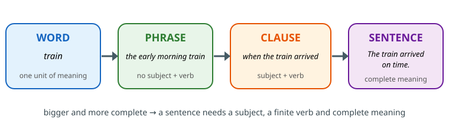

How to Use This Notebook – Study Routes & Series Map
FoundationIntermediateAdvancedExam Focus
◎Welcome!
This notebook teaches English step by step – from the alphabet to advanced exam English – so that you can learn without a teacher. Read the rule, study the examples, avoid the common mistakes, practise, and then check yourself with the answer key.
Simple Hindi help is given wherever a rule is difficult. All rules, examples and answers are in English.
How every chapter works
Step
What you do
Box you will see
1
Read the learning goals and the level of the chapter
◎ Learning Goals
2
Try the warm-up – you already know more than you think!
☀ Warm-up
3
Learn the rule (formula, table or diagram)
R RULE
4
Study examples from home, school, market, travel, office and exams
E EXAMPLES
5
Avoid common mistakes – wrong ✗, right ✓ and the reason
✗ COMMON MISTAKES
6
Understand confusing pairs
⇄ COMPARE & UNDERSTAND
7
Revise the key takeaways
✓ QUICK REVISION
8
Practise – easy → medium → difficult; write in the space given
✎ PRACTICE
9
Check your answers and read the explanation for every mistake
✓ ANSWER KEY
हिHindi Help – आसान भाषा में
हर chapter पहले नियम (rule) समझाता है, फिर उदाहरण देता है, फिर आम गलतियाँ बताता है। Practice के बाद answer key से खुद जाँचें। जो सवाल गलत हुआ, उसका explanation ज़रूर पढ़ें और उसे अपनी notebook में लिखें।
Chapter levels
Foundation – absolute beginners, school learners.
Intermediate – school & college students, daily English learners.
Advanced – college, job and confident learners.
Exam Focus – competitive exam practice (exam-style questions).
★How to use the answer key
Finish a full practice set before you look at the answers.
Mark each answer ✓ or ✗ with a different-coloured pen.
For every ✗, read the explanation and write the correct sentence once.
After 7 days, redo only the ✗ questions. This is how real progress happens.
Four study routes
Take the Diagnostic Test (next section) first. Then choose the route that matches your goal.
This book uses standard Indian English, which mostly follows British spelling (colour, centre, practise as a verb). Wherever American English is different (color, center, practice), a short note says so. Both forms are correct – just be consistent in one piece of writing.
Series map – Master Table of Contents
Vol
Part
Chapters
Level
1
A – Foundation English
★ Diagnostic Test · 1 The English Alphabet: Letters, Vowels & Consonants · 2 Letter Sounds, Syllables & Spelling Basics · 3 Capital Letters & Punctuation · 4 Words, Word Order, Subject & Predicate · 5 Phrase, Clause & Sentence · 6 Kinds of Sentences · 7 Questions, Negatives & Short Answers · 8 Be, Have & Do – Basic Use · ★ Part A Revision Quiz
Foundation
2
B – Parts of Speech
9 Nouns: Kinds, Countable & Uncountable · 10 Singular, Plural & Gender · 11 Possessives · 12 Pronouns & Pronoun Reference · 13 Articles: A, An, The & Zero Article · 14 Determiners & Quantifiers (some/any, much/many, few/a few, little/a little, each/every) · 15 Adjectives & Adjective Order · 16 Degrees of Comparison · 17 Adverbs & Their Position · 18 Prepositions (time, place, movement, between/among, dependent prepositions) · 19 Conjunctions · 20 Interjections · ★ Part B Revision Quiz
Foundation → Intermediate
3
C – Verbs, Tenses & Sentence Building
21 Main & Helping Verbs, Verb Forms · 22 Regular & Irregular Verbs · 23 Action/Stative, Transitive/Intransitive Verbs · 24 Subject–Verb Agreement · 25 Present Tenses · 26 Past Tenses · 27 Future Tenses & Future Expressions · 28 Tense Comparisons (present perfect vs past simple, simple vs continuous) · 29 Modals & Semi-modals · 30 Imperatives, Question Tags & Indirect Questions · 31 Gerunds & Infinitives · 32 Participles & Common Verb Patterns · ★ Part C Revision Quiz
Start with the Diagnostic Test and note your weak parts.
Study one chapter at a time: rule → examples → mistakes → practice → answer key.
Speak every example aloud. Write every answer – don't just think it.
Diagnostic Test – Find Your Starting Point
FoundationIntermediateAdvancedExam Focus
◎Why take this test?
This test shows what you already know and where to start. Do not use a dictionary or ask anyone. If you don't know an answer, leave it – a blank answer gives better information than a guess.
Time: about 25–30 minutes · Total: 40 marks (1 mark each)
✎Section 1 – Foundation (Q1–10)
Which of these is a vowel? (a) b (b) e (c) t (d) m
Choose the correctly written sentence. (a) my name is riya. (b) My name is Riya. (c) My Name Is riya. (d) my Name is Riya.
Choose the correct punctuation: Where do you live___ (a) . (b) , (c) ? (d) !
Put the words in order: goes / to school / Ravi / every day (a) Ravi every day goes to school. (b) To school Ravi goes every day. (c) Ravi goes to school every day. (d) Goes Ravi to school every day.
___ you hungry? (a) Is (b) Are (c) Am (d) Be
She ___ two brothers. (a) have (b) has (c) is (d) having
___ he play cricket? (a) Do (b) Does (c) Is (d) Are
Choose the correct negative: I like coffee. (a) I not like coffee. (b) I don't like coffee. (c) I doesn't like coffee. (d) I no like coffee.
"Is this your bag?" – Choose the natural short answer. (a) Yes, it is. (b) Yes, it's. (c) Yes, is it. (d) Yes, this is it bag.
Which group of words is a complete sentence? (a) in the morning (b) a cup of tea (c) The baby is sleeping. (d) when the bus came
✎Section 2 – Parts of Speech (Q11–18)
I saw ___ elephant at the zoo. (a) a (b) an (c) the (d) no article
There isn't ___ milk in the fridge. (a) some (b) many (c) any (d) a few
This is ___ book. (book of my sister) (a) my sister book (b) my sisters book (c) my sister's book (d) my sister book's
Mount Everest is the ___ mountain in the world. (a) high (b) higher (c) highest (d) most high
The meeting is ___ Monday ___ 10 a.m. (a) in / on (b) on / at (c) at / in (d) on / in
Divide the sweets ___ the three children. (a) between (b) among (c) with (d) in
She speaks English very ___. (a) good (b) well (c) nice (d) better
Choose the correct order: a ___ table (a) wooden round big (b) big round wooden (c) round wooden big (d) wooden big round
✎Section 3 – Verbs & Tenses (Q19–28)
Water ___ at 100 °C. (a) boil (b) boils (c) is boiling (d) boiled
Look! The children ___ in the rain. (a) play (b) plays (c) are playing (d) played
I ___ my homework. Can I go out now? (a) finish (b) have finished (c) had finish (d) am finishing
We ___ Delhi last year. (a) have visited (b) visit (c) visited (d) were visit
When I reached the station, the train ___. (a) already left (b) has already left (c) had already left (d) leaves already
One of my friends ___ a doctor. (a) are (b) is (c) were (d) be
You ___ wear a helmet while riding a bike. It's the law. (a) must (b) might (c) could (d) would
He is good at ___ songs. (a) sing (b) to sing (c) singing (d) sang
She is a good dancer, ___ she? (a) is (b) isn't (c) doesn't (d) wasn't
I ___ you tomorrow. (decision made earlier – planned) (a) am meeting (b) meet (c) met (d) have met
✎Section 4 – Advanced Grammar (Q29–34)
Passive of "They built this bridge in 1990." (a) This bridge built in 1990. (b) This bridge was built in 1990. (c) This bridge is built by them in 1990. (d) This bridge has built in 1990.
He said, "I am tired." → He said that he ___ tired. (a) is (b) am (c) was (d) has been
If I ___ rich, I would travel the world. (a) am (b) were (c) will be (d) have been
The man ___ car was stolen went to the police. (a) who (b) whom (c) which (d) whose
Choose the sentence with correct parallel structure. (a) She likes reading, to swim and cycling. (b) She likes reading, swimming and cycling. (c) She likes to read, swimming and to cycle. (d) She likes read, swim and cycling.
Not only ___ late, but he also forgot his file. (a) he came (b) came he (c) did he come (d) he did come
✎Section 5 – Vocabulary, Communication & Exam English (Q35–40)
Synonym of rapid: (a) slow (b) quick (c) late (d) heavy
Antonym of ancient: (a) old (b) modern (c) historic (d) aged
"Could you please ___ the AC? It's very cold." (a) turn on (b) turn off (c) turn up (d) turn in
Meaning of the idiom "a piece of cake": (a) something very easy (b) a sweet dish (c) a small share (d) a birthday party
Most polite way to ask for help in an office: (a) Give me that file. (b) You must help me. (c) Could you help me with this file, please? (d) Help me, okay?
Spot the error: He don't (a) / know the answer (b) / to this question. (c) / No error (d) (a) He don't (b) know the answer (c) to this question (d) No error
✓Answer Key – Diagnostic Test
1-be is a vowel (a, e, i, o, u). → Ch 1 2-b A sentence starts with a capital; names (proper nouns) are capitalised. → Ch 3 3-cWhere question → question mark. → Ch 3 4-c English order: Subject + Verb + Object/Place + Time. → Ch 4 5-bYou takes are. → Ch 8 6-bShe/He/It + has. → Ch 8 7-bHe/She/It questions in the simple present use Does. → Ch 7, 8 8-bI don't (do not) + base verb. → Ch 7 9-a Short answers don't contract at the end: Yes, it is. (not Yes, it's.) → Ch 7 10-c It has a subject (The baby) and a verb (is sleeping) and complete meaning. → Ch 5 11-belephant starts with a vowel sound → an. → Ch 13 12-cany in negatives; milk is uncountable (not many/a few). → Ch 14 13-c Possessive 's: my sister's book. → Ch 11 14-cthe + superlative for one out of many. → Ch 16 15-bon + day, at + clock time. → Ch 18 16-bamong for three or more (between for two – but see Ch 18 for exceptions). → Ch 18 17-bwell is the adverb of good. → Ch 17 18-b Order: size → shape → material. → Ch 15 19-b General truth → simple present; water is singular → boils. → Ch 25 20-cLook! → action happening now → present continuous. → Ch 25 21-b Completed action with present result → present perfect. → Ch 28 22-c Finished past time (last year) → simple past, not present perfect. → Ch 28 23-c Earlier of two past actions → past perfect. → Ch 26 24-bOne of + plural noun takes a singular verb. → Ch 24 25-a Rule/obligation → must. → Ch 29 26-c After a preposition (at) use -ing. → Ch 31 27-b Positive statement → negative tag: isn't she? → Ch 30 28-a Fixed personal plan → present continuous for future. → Ch 27 29-b Past simple passive: was/were + V3. → Ch 37 30-c Reported speech: am → was (backshift). → Ch 38 31-b Second conditional: If + past (were) … would. → Ch 39 32-dwhose shows possession (his car). → Ch 34 33-b Parallel -ing forms. → Ch 42 34-c Negative opener Not only → inversion: did he come. → Ch 41 35-brapid = quick. → Ch 48 36-bancient ↔ modern. → Ch 48 37-b Cold room → switch the AC off. turn on = start; turn up = increase. → Ch 52 38-aa piece of cake = very easy (informal). → Ch 53 39-cCould you … please? is polite and professional. → Ch 60, 66 40-aHe doesn't know. He/She/It + doesn't. → Ch 24, 78
What your score means
Section
Your score
If you scored less than …
Start with
1 Foundation (Q1–10)
___ / 10
8
Volume 1 – all chapters
2 Parts of Speech (Q11–18)
___ / 8
6
Volume 2 (chapters shown in the key)
3 Verbs & Tenses (Q19–28)
___ / 10
7
Volume 3
4 Advanced Grammar (Q29–34)
___ / 6
4
Volume 4
5 Vocabulary, Communication & Exam (Q35–40)
___ / 6
4
Volumes 5, 6 & 8
Total
___ / 40
0–15: Start from Chapter 1 and follow Route 1 or 2. Go slowly – one chapter in 2–3 days.
16–28: Revise Volume 1 quickly (do only the practice sections), then study Volumes 2 and 3 carefully.
29–35: Your base is good. Focus on the chapters linked to your wrong answers, then Volumes 4, 5 and 7.
36–40: Excellent! Go to Volume 4 and the Exam Focus chapters, and use the reference volume for revision.
हिHindi Help – आसान भाषा में
जिस section में कम marks आए, वहीं से पढ़ाई शुरू करें। Answer key में हर जवाब के आगे chapter number दिया है – गलत सवाल वाले chapter सबसे पहले पढ़ें। 4 हफ़्ते बाद यही test दोबारा दें और score की तुलना करें।
The English Alphabet: Letters, Vowels & Consonants
Chapter 1Foundation
◎Learning Goals – after this chapter you can
write all 26 letters in capital and small form and say their names correctly;
tell vowels from consonants, and know when Y works like a vowel;
understand that a letter and a sound are not always the same (hour, university);
put words in alphabetical order like a dictionary;
spell your name, email and address aloud on the phone.
☀Warm-up – you already know these!
Read these everyday words aloud: bus, cab, pen, milk, tea, OK, TV, ATM, SMS, PIN.
How many letters does milk have? (Answer: 4 – m, i, l, k)
In ATM, we say each letter's name: "A-T-M". In bus, we say the letter sounds together: "bus".
1.1 The 26 letters
RRULE – The English alphabet
The English alphabet has 26 letters. Each letter has a capital (upper-case) form and a small (lower-case) form.
Capital
A
B
C
D
E
F
G
H
I
J
K
L
M
Small
a
b
c
d
e
f
g
h
i
j
k
l
m
Capital
N
O
P
Q
R
S
T
U
V
W
X
Y
Z
Small
n
o
p
q
r
s
t
u
v
w
x
y
z
Letter names – how to say them
Letter
Name (say it like)
Letter
Name (say it like)
A
ay (as in day)
N
en
B
bee
O
oh
C
see
P
pee
D
dee
Q
kyoo (as in queue)
E
ee
R
ar (Indian/British)
F
ef
S
es
G
jee
T
tee
H
aych (not "hech")
U
yoo (as in you)
I
eye
V
vee
J
jay
W
double-yoo
K
kay
X
eks
L
el
Y
way (as in why)
M
em
Z
zed (Indian/British) / zee (American)
iNOTE – Indian, British and American English
Z is "zed" in Indian and British English and "zee" in American English. Both are correct.
H is said "aych". Many speakers say "haych"; it is widely heard, but "aych" is the standard form used in exams and interviews.
हिHindi Help – आसान भाषा में
English में 26 letters हैं। हर letter के दो रूप होते हैं – capital (बड़ा: A) और small (छोटा: a)। Letter का नाम ("bee") और letter की आवाज़ (sound, जैसे bus में "b") अलग चीज़ें हैं।
1.2 Vowels and consonants
RRULE – Vowels and consonants
Vowel letters (5):a, e, i, o, u
Consonant letters (21): all the other letters – b, c, d, f, g, h, j, k, l, m, n, p, q, r, s, t, v, w, x, y, z
A vowel sound comes out freely (the mouth is open: a in cat, ee in see).
A consonant sound is made when the tongue, teeth or lips stop or squeeze the air (b, t, s, m).
Almost every English word needs at least one vowel sound. (cat, pen, sit, hot, cup)
The special letter Y
Y as a consonant (at the start of a word/syllable)
Y as a vowel (inside or at the end)
yes, yellow, you, young, beyond
my, sky, gym, happy, baby, fly
EEXAMPLES – find the vowels
school → s-c-h-o-o-l (2 vowel letters)
market → m-a-r-k-e-t (2 vowels)
mobile → m-o-b-i-l-e (3 vowels)
rhythm → no a, e, i, o, u – here y acts as the vowel
queue → q-u-e-u-e (4 vowel letters, but you hear only one sound: "kyoo")
1.3 Letters vs sounds (very important for a and an)
RRULE – Listen to the first SOUND, not the first letter
A word may start with a vowel letter but a consonant sound, or with a consonant letter but a vowel sound.
Word
First letter
First sound
Article
hour
h (consonant)
"aw" – vowel sound (h is silent)
an hour
honest
h
"o" – vowel sound
an honest man
university
u (vowel)
"yoo" – consonant sound
a university
one
o (vowel)
"w" – consonant sound
a one-day trip
European
E
"yoo" – consonant sound
a European city
MBA
M
"em" – vowel sound
an MBA student
SMS
S
"es" – vowel sound
an SMS
umbrella
u
"u" – vowel sound
an umbrella
You will study a/an/the fully in Chapter 13. For now, remember: an comes before a vowel sound.
हिHindi Help – आसान भाषा में
a या an चुनते समय word का पहला letter नहीं, पहली आवाज़ (sound) सुनें। hour में "h" बोला ही नहीं जाता, आवाज़ "आ" से शुरू होती है, इसलिए an hour। university "यू" (य की आवाज़) से शुरू होता है, इसलिए a university।
1.4 Alphabetical order (dictionary order)
RRULE – How to arrange words alphabetically
Look at the first letter of each word and arrange them A → Z.
If the first letters are the same, look at the second letter, then the third, and so on.
A shorter word comes first if it is the beginning of a longer one: car → card → cardboard.
EEXAMPLES
apple, bread, milk, tea (a, b, m, t)
bag, ball, bank, bat (all start with ba → look at the 3rd letter: g, l, n, t)
pen, pencil, penny (pen is the beginning of the others → first)
1.5 Spelling aloud (phone, bank, office)
❝DIALOGUE – Booking a cab on the phone
Caller: Hello, I'd like to book a cab to the airport. Agent: Sure. May I have your name, please? Caller: It's Meera Shah. M-E-E-R-A, Meera. S-H-A-H, Shah. Agent: And your email ID? Caller: meera dot shah nine-two at gmail dot com. That's M-E-E-R-A dot S-H-A-H nine-two. Agent: Thank you, Ms Shah. Your cab is booked.
★TIP – Spelling clearly
Say double for two same letters: Meera → "M, double E, R, A".
For confusing letters, use a word: "B for Bombay", "P for Pune", "M for Mumbai", "N for Nagpur".
In emails, say "dot" for ".", "at" for "@", "underscore" for "_", "hyphen/dash" for "-".
✗COMMON MISTAKES
✗ Wrong
✓ Right
Why
a hour
an hour
h is silent; first sound is a vowel sound
an university
a university
u sounds like "yoo" (consonant sound)
There are 5 vowels sounds.
There are 5 vowel letters.
English has 5 vowel letters but many more vowel sounds
"Haych" is the only correct name of H.
"Aych" is standard; "haych" is a common variant.
Know the standard form for exams and interviews
b and d mixed: bab for dad
dad
b has its round part on the right, d on the left
My name is "S-I-M-R-A-N" said too fast
S-I-M… R-A-N (pause in groups)
Spell in small groups so the listener can write
⇄COMPARE & UNDERSTAND – letter vs sound
Letter
Sound
What is it?
A written symbol (A, b, k)
What you hear when you speak
Example
knife has 5 letters
knife has 3 sounds: n-ai-f (k and e are silent)
Why it matters
Spelling
Pronunciation and choosing a/an
✓QUICK REVISION
26 letters · 5 vowel letters (a, e, i, o, u) · 21 consonant letters.
Y is a consonant at the start (yes) and a vowel inside or at the end (my, gym, happy).
Choose a/an by the first sound: an hour, a university, an MBA.
Alphabetical order: compare the 1st letter, then the 2nd, then the 3rd …
Z = zed (Indian/British) or zee (American).
✎PRACTICE A – Multiple choice (choose one answer)
How many letters are there in the English alphabet? (a) 24 (b) 25 (c) 26 (d) 28
Which of these is not a vowel letter? (a) a (b) i (c) u (d) r
How many consonant letters are there? (a) 5 (b) 19 (c) 21 (d) 26
In which word is y a vowel? (a) yes (b) yellow (c) sky (d) young
In which word is y a consonant? (a) gym (b) my (c) happy (d) yesterday
Which word begins with a vowel sound? (a) university (b) hour (c) one (d) yacht
Which word begins with a consonant sound? (a) umbrella (b) honest (c) European (d) apple
Choose the correct phrase. (a) a hour (b) an university (c) an SMS (d) a MBA student
Which list is in alphabetical order? (a) mango, apple, banana (b) apple, banana, mango (c) banana, apple, mango (d) apple, mango, banana
Which comes first in a dictionary? (a) bank (b) ball (c) bat (d) bag
The standard name of the letter H is: (a) aych (b) hech (c) hay (d) ech
In American English, the letter Z is called: (a) zed (b) zee (c) zad (d) zet
How many vowel letters are there in the word education? (a) 3 (b) 4 (c) 5 (d) 6
Which word has no a, e, i, o or u? (a) myth (b) moth (c) math (d) mouth
✎PRACTICE B – Write the small letter
Q → ___ 16. G → ___ 17. R → ___ 18. E → ___ 19. B → ___ 20. D → ___
✎PRACTICE F – Put these words in alphabetical order
tea, milk, coffee, juice
plate, plant, place, plan
sun, Sunday, sunny, sum
✎PRACTICE G – Real life and translation
Spell your full name in groups, the way you would on the phone (use "double" if needed).
Write how you would say this email ID aloud: ravi_kumar21@yahoo.com
Translate into English: "मेरे नाम की spelling R-O-H-I-T है।"
Correct the sentence: "I waited for a hour at an university gate."
✓ANSWER KEY – Chapter 1
Practice A 1-c 26 letters. 2-dr is a consonant; vowel letters are a, e, i, o, u. 3-c 26 − 5 = 21 consonant letters. 4-c In sky, y gives the vowel sound "ai". In the others y starts the word → consonant. 5-dyesterday – y at the start works as a consonant. (gym, my, happy – vowel.) 6-bhour – the h is silent, so the first sound is a vowel sound. (university, one, yacht start with consonant sounds "y", "w", "y".) 7-cEuropean begins with "yoo" – a consonant sound. umbrella, honest, apple begin with vowel sounds. 8-cSMS is said "es-em-es"; the first sound "e" is a vowel sound → an SMS. (Correct forms: an hour, a university, an MBA student.) 9-b a → b → m. 10-dbag (bag – g comes before l, n, t). 11-aaych is the standard name. 12-bzee (American); zed in Indian/British English. 13-c e-u-a-i-o → 5 vowel letters. 14-amyth – only y works as the vowel. Practice B 15. q 16. g 17. r 18. e 19. b 20. d Practice C 21. c, e 22. l, n 23. r, u 24. x, z Practice D 25. 2 (a, e) 26. 3 (o, u, e) 27. 3 (a, a, a) 28. 0 vowel letters – but y works as the vowel 29. 5 (e, a, u, i, u) Practice E 30. an 31. an (silent h) 32. a ("yoo") 33. an 34. a ("w" sound) 35. an (silent h) 36. an ("eks") 37. a ("yoo") Practice F 38. coffee, juice, milk, tea 39. place, plan, plant, plate (plac → plan → plant → plat; plan comes before plant because it is the beginning of plant) 40. sum, sun, Sunday, sunny (sum before sun; sun is the beginning of the others; Sunda… before Sunn… because d comes before n) Practice G – sample answers
Sample: "My name is Priya Patel. P-R-I-Y-A, Priya. P-A-T-E-L, Patel." Any answer is correct if the letters are said in small groups and repeated letters use "double".
The spelling of my name is R-O-H-I-T. / My name is spelt R-O-H-I-T. (American: spelled). Both are correct.
I waited for an hour at a university gate.
Letter Sounds, Syllables & Spelling Basics
Chapter 2Foundation
◎Learning Goals – after this chapter you can
read common letter sounds and letter groups (sh, ch, th, ph, ck);
tell short vowel sounds (cap) from long vowel sounds (cape);
recognise common silent letters (know, write, hour, lamb);
break words into syllables and spell longer words in parts;
use four basic spelling rules for -s/-es, -ing and -ed.
☀Warm-up
Say these pairs aloud. Listen to the difference: hat – hate · pin – pine · hop – hope · cut – cute.
What changed in the spelling? → Only an e was added at the end, but the vowel sound became long!
2.1 Common consonant sounds
Most consonants have one main sound. A few letters have two sounds, and some sounds are spelt with two letters.
RRULE – Letters with two sounds
Letter
Hard sound
Soft sound (before e, i, y)
C
"k" – cat, cup, come
"s" – city, centre, rice, bicycle
G
"g" – go, game, bag
"j" – gym, page, orange, giant
S
"s" – sun, bus
"z" – is, has, rose, music
X
"ks" – box, six
"gz" – exam, exact
iNOTE
The soft g rule has common exceptions: get, give, girl, begin – here g is hard although e or i follows. Learn these by heart.
Two letters, one sound (digraphs)
Letters
Sound
Examples
sh
"sh" (श)
shop, fish, wash
ch
"ch" (च)
chair, lunch, teacher
tch
"ch" after a short vowel
match, watch, kitchen
th
soft "th" (थ जैसा, जीभ दाँतों के बीच)
think, three, bath
th
voiced "th" (द जैसा)
this, that, mother
ph
"f"
phone, photo, elephant
ck
"k" after a short vowel
back, clock, ticket
wh
"w"
what, when, white
ng
nasal "ng"
sing, long, spring
qu
"kw"
queen, quick, question
हिHindi Help – आसान भाषा में
th की दो आवाज़ें हैं: think में जीभ हल्की-सी दाँतों के बीच रखकर हवा निकालें (न "ट", न "थ" ज़ोर से), और this में वही जगह, पर आवाज़ के साथ ("द" जैसा)। ph हमेशा "फ़" बोला जाता है: phone = "फ़ोन"।
2.2 Short and long vowel sounds
RRULE – Short vs long vowels and the "magic e"
A short vowel usually comes in a consonant–vowel–consonant word: cap, pet, pin, hop, cut.
Adding an e at the end (consonant–vowel–consonant–e) makes the vowel long – it says its letter name – and the e is silent: cape, Pete, pine, hope, cute.
Vowel
Short (as in)
Long (says its name, as in)
a
cat, map
cake, name
e
bed, ten
these, complete
i
sit, big
bike, time
o
hot, dog
home, nose
u
cup, sun
cube, tune
Vowel teams (two vowels, one long sound)
Team
Sound
Examples
ai / ay
long a
rain, train, day, play
ee / ea
long e
see, tree, tea, read
oa / ow
long o
boat, road, snow, slow
igh / ie
long i
night, light, pie, tie
oo
"oo" (long) / "u" (short)
food, moon / book, look
ou / ow
"ow"
house, out, cow, now
iNOTE – one spelling, different sounds
ow can sound like snow (long o) or cow ("ow"). ea can sound like tea or bread ("e"). English spelling is not 100 % regular – read the word and listen to it (dictionary or text-to-speech).
2.3 Silent letters
RRULE – Common silent letters (written but not spoken)
Silent letter
Pattern
Examples
k
kn- at the start
know, knife, knee, knock
w
wr- at the start
write, wrong, wrist; also answer, sword
b
-mb at the end; before t
lamb, climb, comb, thumb, doubt, debt
h
some words
hour, honest, honour, what (in most accents)
gh
-igh, -ough
night, light, daughter, though
l
-alk, -ould
walk, talk, could, should, half
t
-sten, -stle
listen, fasten, castle, whistle
e
at the end (magic e)
make, hope, time
✗COMMON MISTAKES – pronunciation
✗ Wrong
✓ Right
Why
"k-nife"
"naif"
k is silent before n at the start
"wa-l-k"
"wawk"
l is silent in -alk
"ve-ge-ta-ble" (4 full beats)
"VEJ-tuh-bl" (3 beats)
the second e is usually not pronounced
"fone" spelt fone
phone
"f" sound is spelt ph in many words
"hour" said "ha-war"
"aw-er"
h is silent
2.4 Syllables – reading and spelling long words
RRULE – What is a syllable?
A syllable is a beat of a word with one vowel sound. Clap as you say the word.
Word
Syllables
Count
pen
pen
1
water
wa · ter
2
computer
com · pu · ter
3
information
in · for · ma · tion
4
responsibility
re · spon · si · bi · li · ty
6
Tip: Count the vowel sounds, not the vowel letters: cake has 2 vowel letters but 1 vowel sound → 1 syllable.
हिHindi Help – आसान भाषा में
Syllable = word का एक "ताल" (beat)। लंबे word को हिस्सों में बोलें और लिखें: in-for-ma-tion। हर हिस्से में एक vowel की आवाज़ होती है। cake में दो vowel letters (a, e) हैं, पर आवाज़ एक है, इसलिए 1 syllable।
2.5 Four basic spelling rules
RRULE 1 – Adding -s or -es (plurals and he/she/it verbs)
Most words: add -s → books, plays, runs.
Words ending in s, ss, sh, ch, x, z, o: add -es → buses, classes, wishes, watches, boxes, goes, potatoes.
Consonant + y → change y to i + es → baby → babies, study → studies, try → tries.
Vowel + y → just -s → boys, days, plays, keys.
RRULE 2 – Drop the silent e before -ing / -ed / -er
make → making, write → writing, dance → danced, use → user But keep e before a consonant suffix: hope → hopeful, care → careless, move → movement.
RRULE 3 – Double the last consonant (short word, short vowel)
One syllable, one short vowel + one consonant → double the consonant before -ing / -ed / -er / -est:
run → running, stop → stopped, big → bigger, hot → hottest, sit → sitting Don't double after two vowels or two consonants: eat → eating, rain → rained, help → helping.
RRULE 4 – Y to I
Consonant + y → change y to i before most endings: happy → happiness, carry → carried, easy → easier. Keep y before -ing: carry → carrying, study → studying (otherwise you would get "ii").
iNOTE – British/Indian vs American spelling of doubled l
travel → travelled, travelling (Indian/British) · traveled, traveling (American). cancel → cancelled / canceled. Both systems are correct; use one consistently.
✗COMMON MISTAKES – spelling
✗ Wrong
✓ Right
Rule
writting
writing
write → drop e, no doubling (long vowel)
runing
running
short vowel + one consonant → double
studing
studying
keep y before -ing
babys
babies
consonant + y → ies
boies
boys
vowel + y → just s
watchs
watches
ch → -es
hopeing
hoping
drop e before -ing
carefull
careful
the suffix is -ful (one l)
⇄COMPARE & UNDERSTAND – one letter changes the meaning
Short vowel
Long vowel (magic e)
hoping = hope + ing (आशा करना)
hopping = hop + ing (कूदना)
I am hoping for a job. / The rabbit is hopping.
taping = tape + ing (टेप लगाना)
tapping = tap + ing (थपथपाना)
She is taping the box. / He is tapping the table.
planed (made smooth with a plane)
planned = plan + ed (योजना बनाई)
We planned a trip.
✓QUICK REVISION
c, g are soft (s, j) before e, i, y: city, gym. Exceptions: get, give, girl.
study + ing → ______ 32. study + ed → ______ 33. stop + ed → ______ 34. dance + ing → ______ 35. box + s/es → ______ 36. play + s → ______ 37. happy + ness → ______ 38. use + ful → ______ 39. sit + ing → ______ 40. rain + ed → ______
✎PRACTICE F – Correct the spelling mistakes in each sentence
My sister is studing for her exams and is very carefull.
The babys are sleepping in two diffrent rooms.
He writted a leter to the bank yesterday.
✎PRACTICE G – Real-life use
You are sending a WhatsApp message to a shopkeeper. Write one sentence asking for two boxes of matches and three bunches of bananas. Check every plural spelling.
Translate: "मैं रोज़ सुबह चलता/चलती हूँ और अख़बार पढ़ता/पढ़ती हूँ।" (Use: walk, read the newspaper). Underline every silent letter you write.
✓ANSWER KEY – Chapter 2
Practice A 1-cc before i is soft → "s". (cat, cup, come → hard "k") 2-bpage – g before e → "j". girl is an exception (hard g). 3-cknee – k is silent before n at the start. 4-bclimb – b is silent after m at the end. 5-ccute – magic e makes u long ("kyoot"). The others are short. 6-bph = "f". 7-c ba · na · na → 3 syllables. 8-brun – short vowel + one consonant → double n → running. 9-cwrite – drop e, do not double (long i) → writing. 10-c consonant + y → ies. 11-a vowel + y → just s. (kies is a common mistake.) 12-bwatch ends in ch → -es. 13-bphone and fan both begin with "f". (city "s"/cat "k"; gym "j"/goat "g"; know "n"/kite "k") 14-cmother – voiced "th" (like this). think, three, bath have the unvoiced "th". Practice B 15. S 16. L 17. L 18. S 19. L 20. S Practice C 21. t 22. w 23. l 24. b 25. h 26. gh Practice D 27. tea · cher (2) 28. ho · li · day (3) 29. im · por · tant (3) 30. um · brel · la (3) Practice E 31. studying 32. studied 33. stopped 34. dancing 35. boxes 36. plays 37. happiness 38. useful (keep e before a consonant suffix) 39. sitting 40. rained (two vowels → no doubling) Practice F
My sister is studying for her exams and is very careful.
The babies are sleeping in two different rooms. (sleep has two vowels → no doubling)
He wrote a letter to the bank yesterday. (write is irregular: write – wrote – written; see Ch 22) Practice G – sample answers
Please send two boxes of matches and three bunches of bananas. (boxes, matches, bunches take -es; bananas takes -s.) Any polite message with these four spellings is correct.
I walk every morning and read the newspaper. Silent letter: the l in walk. (morning and newspaper have no silent letters.) I go for a walk every morning and read the newspaper is also correct.
Capital Letters & Punctuation
Chapter 3Foundation
◎Learning Goals – after this chapter you can
use capital letters correctly for sentences, names, places, days, months, languages and titles;
end sentences with the right mark: . ? !
use commas in lists, after opening words, in addresses, dates and when calling someone;
use the apostrophe for short forms (don't) and possession (Riya's);
use quotation marks, colon, semicolon, hyphen, dash and brackets in simple ways;
know the small differences between Indian/British and American punctuation.
☀Warm-up – what is wrong?
"on monday i went to the mall in pune with priya"
Count the capital letters that are missing. (Answer: 6 → On Monday I went to the mall in Pune with Priya. – and a full stop is missing too!)
Ahmedabad, Kerala, India, the Ganga, Mount Abu, M.G. Road
5
Days, months, festivals
Monday, January, Diwali, Eid, Christmas
6
Languages and nationalities
English, Hindi, Gujarati, Indian, Japanese food
7
Titles before names
Mr Singh, Mrs Kapoor, Ms Rao, Professor Joshi, Prime Minister Modi
8
Organisations, companies, brands
State Bank of India, Indian Railways, Tata Motors
9
Main words in titles of books, films, headings
The Jungle Book, A Report on Water Saving
10
Short forms (abbreviations/acronyms)
ATM, PIN, SMS, UPI, PM, ID
RRULE – Do NOT use a capital letter for …
Seasons: summer, winter, monsoon (not Summer), unless at the start of a sentence.
Common nouns in the middle of a sentence: my mother, the doctor, a city, the principal (but Principal Sharma as a title before a name).
Directions used as directions: go north, the east side (but North India, the Middle East as names of regions).
Subjects (except languages): I like maths and science, but I also like English.
हिHindi Help – आसान भाषा में
Capital letter हर sentence की शुरुआत में, I (मैं) में, और हर नाम (व्यक्ति, जगह, दिन, महीना, त्योहार, भाषा, कंपनी) में लगता है। मौसम (summer, winter) और साधारण शब्द (mother, teacher, city) के लिए sentence के बीच में small letter लिखें।
3.2 End marks: . ? !
RRULE – Ending a sentence
Mark
Name
Use
Example
.
full stop (British/Indian) / period (American)
statements and polite commands
I live in Surat. Please sit down.
?
question mark
direct questions
What is your name? Can you help me?
!
exclamation mark
strong feeling, surprise, a shout
What a beautiful day! Stop! Wow!
✗COMMON MISTAKES – end marks
✗ Wrong
✓ Right
Why
Where is the station.
Where is the station?
A direct question needs ?
I asked him where the station was?
I asked him where the station was.
This is an indirect question inside a statement → full stop
It's so nice!!!!!
It's so nice!
Use only one exclamation mark in formal writing
Please send the report?
Please send the report.
A polite request in statement form ends with a full stop
3.3 The comma ( , )
RRULE – Six everyday uses of the comma
Lists (3 or more items): I bought milk, bread, eggs and butter.
After an opening word or phrase: Yes, I can come. / However, the shop was closed. / In the morning, we went to the temple.
Calling someone (vocative): Rahul, please close the door. / Thank you, sir.
Before a quotation: She said, "I'm ready."
Joining two full sentences with and, but, so, or (when they are long): I called the office, but nobody answered.
Dates, numbers and addresses: 15 August, 1947 / Monday, 3 March / 12,50,000 (Indian) / 1,250,000 (international) / Navrangpura, Ahmedabad
⇄COMPARE & UNDERSTAND – a comma can change the meaning
Sentence
Meaning
Let's eat, Grandma!
We are calling Grandma to come and eat.
Let's eat Grandma!
(Funny/wrong) We are going to eat Grandma!
My brother, who lives in Pune, is a doctor.
I have one brother; extra information about him.
My brother who lives in Pune is a doctor.
I have more than one brother; this one lives in Pune.
iNOTE – Oxford (serial) comma and number style
Oxford comma = a comma before and in a list: red, white, and blue. It is common in American and academic writing; Indian/British writing often leaves it out (red, white and blue). Both are correct – be consistent, and use it when it prevents confusion.
Numbers: Indian style groups as lakh/crore (12,50,000); international style groups in thousands (1,250,000). Use the style your exam, office or client expects.
3.4 The apostrophe ( ' )
RRULE – Two jobs of the apostrophe
1. Short forms (contractions) – the apostrophe shows missing letters:
Full
Short
Full
Short
I am
I'm
do not
don't
you are
you're
does not
doesn't
he is / he has
he's
cannot
can't
it is / it has
it's
will not
won't
we have
we've
I would / I had
I'd
2. Possession (belonging) – Riya's bag = the bag of Riya:
Singular noun → 's: the teacher's desk, my friend's phone
Plural noun ending in -s → ' only: the students' books, my parents' house
Plural not ending in -s → 's: children's park, women's day
(Full detail in Chapter 11.)
✗COMMON MISTAKES – apostrophe
✗ Wrong
✓ Right
Why
The dog wagged it's tail.
The dog wagged its tail.
its = belonging to it (no apostrophe); it's = it is / it has
Your welcome.
You're welcome.
you're = you are; your = belonging to you
Apple's 50 per kg
Apples ₹50 per kg
A simple plural never takes an apostrophe
Do'nt
Don't
The apostrophe goes where the letter (o) is missing: do not → don't
Bring three things: a pen, a photo and your ID card.
;
semicolon
joins two closely related full sentences
It was raining; the match was cancelled.
-
hyphen (short)
joins words into one idea
a well-known actor, twenty-five, mother-in-law, a 5-year-old boy
–
dash (longer)
a sudden break or added comment
He was tired – very tired.
( )
brackets (parentheses)
extra information
Call me tomorrow (after 5 p.m.).
…
ellipsis
words left out / speech trailing off
I was going to say… never mind.
iNOTE – British/Indian vs American punctuation
Point
Indian / British
American
Titles
Mr, Mrs, Dr (no full stop) – Mr. also accepted in India
Mr., Mrs., Dr. (with full stop)
Quotation marks
often single: 'Hello' (double also common in India)
double: "Hello"
Comma/full stop with quotes
outside if not part of the quote: He called it 'urgent'.
usually inside: He called it "urgent."
Time
10.30 a.m. or 10:30 a.m.
10:30 a.m.
All of these are acceptable – follow one style consistently in a document.
⇄COMPARE & UNDERSTAND – hyphen or no hyphen?
Without hyphen
With hyphen
The boy is five years old. (after the noun)
a five-year-old boy (before the noun, joined as one adjective; year stays singular)
a man eating fish (a man who is eating fish)
a man-eating fish (a fish that eats people!)
re cover – not a word
re-cover the sofa (cover again) vs recover from illness
★EXAM TIP
Exams often test: its/it's, your/you're, capital letters for days, months, languages but not seasons, ? after direct questions only, and apostrophe with plural possessives (students'). Read the whole sentence before choosing.
✓QUICK REVISION
Capitals: sentence start, I, names, places, days, months, festivals, languages, nationalities, titles, organisations, short forms. Not seasons or common nouns.
Commas: lists, opening words, calling someone, before quotes, joining long sentences, dates/numbers/addresses.
it's = it is; its = belonging to it. you're = you are; your = belonging to you.
Colon before a list; semicolon between two linked sentences; hyphen in five-year-old.
✎PRACTICE A – Multiple choice
Choose the correctly capitalised sentence. (a) we visited Jaipur in Winter. (b) We visited Jaipur in winter. (c) We Visited jaipur in winter. (d) We visited jaipur in Winter.
Which word should always have a capital letter? (a) summer (b) teacher (c) Tuesday (d) city
Choose the correct end mark: What time does the bank open___ (a) . (b) ! (c) ? (d) ,
Choose the correct end mark: I wonder what time the bank opens___ (a) . (b) ? (c) ! (d) ;
The dog is chasing ___ tail. (a) it's (b) its (c) its' (d) it is
___ going to be late if you don't hurry. (a) Your (b) Youre (c) You're (d) Your'e
Choose the correct possessive: the books of the students (a) the student's books (b) the students' books (c) the students's books (d) the students books'
Choose the correct contraction of will not. (a) willn't (b) wont (c) won't (d) wo'nt
Which sentence uses the comma correctly? (a) Rahul, please open the window. (b) Rahul please, open the window. (c) Rahul please open, the window. (d) Rahul please open the window,.
Which sentence uses the colon correctly? (a) I need: milk. (b) Bring these: a pen, a pencil and an eraser. (c) She is: my sister. (d) We went to: Delhi.
Choose the correct hyphen use. (a) a ten-year-old girl (b) a ten year-old girl (c) a ten-years-old girl (d) a ten-year old girl
Which is correct in American English? (a) Mr. Shah (b) Mr Shah (c) both (a) and (b) are wrong (d) M.r Shah
Which word should NOT begin with a capital letter in the middle of a sentence? (a) Gujarati (b) Diwali (c) monsoon (d) India
Choose the correctly punctuated sentence. (a) It was late, we went home. (b) It was late; we went home. (c) It was late we went home. (d) It was; late we went home.
✎PRACTICE B – Rewrite with correct capital letters and end marks
my uncle lives in mumbai and works for indian railways
is the shop open on sunday
we celebrate holi in march every year
i can speak hindi, english and marathi
what a lovely surprise
✎PRACTICE C – Add commas where needed
Please buy rice dal sugar and oil.
Yes I have finished the work.
Thank you madam.
She said "I will call you later."
On 26 January 1950 India became a republic.
✎PRACTICE D – Write the short form (contraction)
I am → ______ 26. they are → ______ 27. does not → ______ 28. cannot → ______ 29. we have → ______ 30. it is → ______
✎PRACTICE E – Choose the correct word
(Its / It's) raining heavily today.
The company changed (its / it's) logo.
Is this (your / you're) umbrella?
(Your / You're) the best teacher!
The (girls' / girl's) hostel has 200 students.
✎PRACTICE F – Find and correct the punctuation error
Where are you going.
The childrens toys are in the box.
He asked me what my name was?
Mango's for sale!
My mother-in law is visiting us.
✎PRACTICE G – Real-life writing
Write a WhatsApp message to your friend inviting him/her to your birthday party. Include a day, a date, a time and a place (3–4 sentences). Check every capital letter and comma.
Translate: "क्या आप सोमवार को ऑफिस आएँगे?"
Punctuate this shopping list sentence correctly: for the trip we need tickets an id card a charger and snacks
✓ANSWER KEY – Chapter 3
Practice A 1-b Sentence start and city names take capitals; seasons (winter) do not. 2-c Days of the week always take a capital. summer, teacher, city are common nouns. 3-c Direct question → ? 4-aI wonder what time… is a statement containing an indirect question → full stop. 5-bits = belonging to it. it's = it is. 6-cYou're = you are. (Your shows belonging.) 7-b Plural noun ending in -s → apostrophe after s: students'. 8-cwon't is the irregular short form of will not. 9-a Comma after the name of the person you are calling. 10-b A colon comes after a complete clause and before a list. In (a), (c), (d) the colon breaks a simple sentence. 11-a Before a noun the whole age is hyphenated and year stays singular: a ten-year-old girl. 12-a American style uses Mr.; Indian/British style often uses Mr without a full stop. 13-c Seasons are not capitalised. Languages, festivals and countries are. 14-b Two full sentences closely linked → semicolon (or a full stop, or , so). (a) is a comma splice (see Ch 43). Practice B
My uncle lives in Mumbai and works for Indian Railways.
Is the shop open on Sunday?
We celebrate Holi in March every year.
I can speak Hindi, English and Marathi.
What a lovely surprise! Practice C
Please buy rice, dal, sugar and oil. (sugar, and oil – with an Oxford comma – is also correct.)
Yes, I have finished the work.
Thank you, madam.
She said, "I will call you later."
On 26 January 1950, India became a republic. (A comma after the opening time phrase. 26 January, 1950 with a comma inside the date is also seen in India; American style is January 26, 1950,.) Practice D 25. I'm 26. they're 27. doesn't 28. can't 29. we've 30. it's Practice E 31. It's 32. its 33. your 34. You're 35. girls' (many girls) Practice F
Where are you going?
The children's toys are in the box. (children is a plural not ending in s → 's)
He asked me what my name was. (indirect question)
Mangoes for sale! (simple plural – no apostrophe; mango + es)
My mother-in-law is visiting us. (two hyphens) Practice G – sample answers
Hi Neha! I'm having my birthday party on Saturday, 14 June, at 7 p.m. It's at Green Leaf Restaurant, C.G. Road. Please come – it won't be fun without you! Check: capital for the day, month, name and place; commas in the date/address; one exclamation mark at a time.
Will you come to the office on Monday? (Capital Monday, question mark.)
For the trip, we need tickets, an ID card, a charger and snacks. (or with a colon: For the trip we need: … is not correct – the colon should follow a complete clause, e.g. For the trip we need four things: tickets, an ID card, a charger and snacks.)
Words, Word Order, Subject & Predicate
Chapter 4Foundation
◎Learning Goals – after this chapter you can
name the 8 parts of speech and recognise them in a simple sentence;
build sentences in the correct English order: Subject + Verb + Object;
add place, manner and time in the natural order;
find the subject and the predicate of any sentence;
avoid "Hindi-order" mistakes like I tea drink.
☀Warm-up – which one sounds right?
I tea drink every morning. 2. I drink tea every morning.
Sentence 2 is correct. In Hindi we say "मैं चाय पीता हूँ" (object before verb), but in English the verb comes before the object.
4.1 Words and the 8 parts of speech (first look)
A word is the smallest unit of language that has a meaning and can stand alone: book, run, happy, quickly, in, and, wow. Every word does a job in a sentence. These jobs are called parts of speech.
RRULE – The 8 parts of speech
Part of speech
Job
Examples
Noun
names a person, place, thing or idea
Ravi, Delhi, phone, water, honesty
Pronoun
takes the place of a noun
I, you, he, she, it, we, they, this
Verb
shows an action or a state
run, eat, write, is, have, seem
Adjective
describes a noun
big, red, happy, three, Indian
Adverb
describes a verb, adjective or another adverb
slowly, very, always, here, today
Preposition
shows place, time, direction or relation
in, on, at, under, with, for
Conjunction
joins words or sentences
and, but, or, because, so
Interjection
shows sudden feeling
Oh! Wow! Ouch! Hurray!
EEXAMPLES – one sentence, many jobs
Wow! My little sister sings very sweetly in the evening and everyone listens.
Word
Part of speech
Word
Part of speech
Wow
interjection
in
preposition
My
possessive word (determiner)
the evening
noun (with the)
little
adjective
and
conjunction
sister
noun
everyone
pronoun
sings
verb
listens
verb
very · sweetly
adverb · adverb
iNOTE – the job decides the part of speech
The same word can be a different part of speech in a different sentence:
I water the plants daily. → verb · Drink some water. → noun
She runs fast. → adverb · a fast train → adjective · Muslims fast in Ramzan. → verb
You will study each part of speech in detail in Volume 2.
4.2 Basic English word order: S + V + O
RRULE – Subject + Verb + Object
Subject (who/what does it?)
Verb (action/state)
Object (whom/what?)
I
drink
tea.
Riya
is reading
a book.
The shopkeeper
gave
me the change.
We
love
our country.
English = S V O. Hindi = S O V ("मैं चाय पीता हूँ"). This one difference causes many mistakes for Indian learners.
हिHindi Help – आसान भाषा में
हिंदी में क्रिया (verb) आख़िर में आती है: "राम किताब पढ़ता है।" English में verb subject के तुरंत बाद आता है: "Ram reads a book." पहले कौन (subject), फिर क्या करता है (verb), फिर किसको/क्या (object)।
Adding more information: Place, Manner, Time
RRULE – the "S-V-O-P-M-T" pattern
Subject + Verb + Object + Place + Manner + Time – the normal order in a statement.
S
V
O
Place (where?)
Manner (how?)
Time (when?)
I
play
cricket
in the park
–
every Sunday.
She
sang
a song
at the function
beautifully
yesterday.
We
reached
–
the station
by bus
at 6 o'clock.
Memory tip: "P before T" – place before time: at home in the evening, in Pune last year.
A time phrase can also go at the start for emphasis: Every Sunday, I play cricket in the park.
RRULE – Adjectives come before nouns
In English an adjective normally comes before the noun it describes: a red car, fresh vegetables, an honest man.
After verbs like be, look, seem, feel, the adjective comes after the verb: The car is red. You look tired.
EEXAMPLES – everyday sentences in the right order
My father reads the newspaper in the living room every morning. (home)
The teacher explained the lesson clearly in class today. (school)
I bought two kilos of tomatoes at the market yesterday. (market)
Please send me the report by email before 5 p.m. (office)
The train leaves platform 3 at 9.15. (travel)
✗COMMON MISTAKES – word order
✗ Wrong
✓ Right
Why
I tea drink.
I drink tea.
Verb before object (S V O)
She yesterday went to Mumbai.
She went to Mumbai yesterday.
Time usually goes at the end (or at the very start)
I go every day to school.
I go to school every day.
Place before time
I very much like mangoes.
I like mangoes very much.
very much goes after the object
He speaks very well English.
He speaks English very well.
Don't put the manner between the verb and the object
A car red is outside.
A red car is outside.
Adjective before the noun
Where you are going?
Where are you going?
In questions the helping verb comes before the subject (Ch 7)
4.3 Subject and predicate
RRULE – Every sentence has two parts
Subject = who or what the sentence is about.
Predicate = what is said about the subject. It always contains the verb.
Subject
Predicate
Birds
fly.
My younger brother
plays the guitar very well.
The bank on M.G. Road
opens at 10 a.m.
Reading books
improves your vocabulary.
She
looks happy today.
How to find the subject: put who? or what? before the verb. The old man near the gate is waiting. → Who is waiting? → The old man near the gate (subject).
RRULE – Simple subject vs complete subject
Complete subject = all the words that make the subject: The tall boy in the red shirtis my cousin.
Simple subject = the main word (usually a noun or pronoun): The tall boy in the red shirt is my cousin.
The simple subject decides the verb form: The boys in the red bus are noisy. (boys → are)
iNOTE – hidden subject and subject after the verb
Commands have a hidden subject you: (You) Close the door.(You) Please sit down.
In questions and sentences with there, the subject may come after the verb: Is the shop open? · There is a cat on the wall. (subject = a cat)
⇄COMPARE & UNDERSTAND – subject vs object
Subject
Object
Position
before the verb
after the verb
Question
Who/What does the action?
Whom/What receives the action?
Example
The dog bit the boy.
The dog bit the boy.
Change the order →
The boy bit the dog.
The meaning changes completely!
English uses word order (not endings like Hindi ने/को) to show who did what.
★EXAM TIP
In "rearrange the words" questions: first find the verb, then put the subject before it and the object after it. Then add place → manner → time. Check that a question has its helping verb before the subject.
✓QUICK REVISION
8 parts of speech: noun, pronoun, verb, adjective, adverb, preposition, conjunction, interjection – the job decides the part of speech.
English order: Subject + Verb + Object (+ Place + Manner + Time). Place before time.
Adjective before the noun (a red car), or afterbe/look/seem (The car is red).
Sentence = subject (who/what) + predicate (what is said – contains the verb).
Commands have a hidden subject you.
✎PRACTICE A – Multiple choice
Which word is a verb? The children laugh loudly. (a) children (b) laugh (c) loudly (d) The
Which word is an adjective? She bought a beautiful dress. (a) bought (b) beautiful (c) dress (d) She
Which word is a preposition? The keys are under the table. (a) keys (b) are (c) under (d) table
Which word is a conjunction? I was tired, but I finished my work. (a) tired (b) but (c) finished (d) my
Choose the correct order. (a) I every day milk drink. (b) I drink every day milk. (c) I drink milk every day. (d) Milk I drink every day.
Choose the correct order. (a) We went yesterday to the zoo. (b) We went to the zoo yesterday. (c) We yesterday went to the zoo. (d) To the zoo we went yesterday went.
Choose the correct sentence. (a) He speaks very well Hindi. (b) He speaks Hindi very well. (c) He very well speaks Hindi. (d) Very well he Hindi speaks.
Choose the correct sentence. (a) I like very much ice cream. (b) I very much like ice cream. (c) I like ice cream very much. (d) Very much I like ice cream.
What is the subject? The new manager of our bank is very polite. (a) The new manager of our bank (b) is very polite (c) our bank (d) polite
What is the simple subject in Q9? (a) new (b) manager (c) bank (d) polite
What is the predicate? My grandparents live in a small village. (a) My grandparents (b) live in a small village (c) a small village (d) My
What is the subject of the command "Please switch off the fan."? (a) fan (b) Please (c) you (understood) (d) switch
In "There is a bank near my house," the subject is: (a) There (b) a bank (c) my house (d) is
In "She runs fast," the word fast is: (a) a noun (b) an adjective (c) an adverb (d) a verb
✎PRACTICE B – Name the part of speech of the word in bold
Oh, I forgot my wallet! → ______
The bus came late. → ______
They are my neighbours. → ______
He gave me a pen. → ______
Tea or coffee? → ______
a wooden box → ______
✎PRACTICE C – Rearrange the words to make correct sentences
a letter / wrote / my sister / yesterday
in the garden / play / the children / every evening
to the office / by metro / goes / my father
carefully / drives / Mr Joshi / his car
bought / at the mall / last Sunday / a new phone / I
very / is / today / the weather / pleasant
✎PRACTICE D – Draw a line between the subject and the predicate (write S | P)
The sun rises in the east.
My best friend from school works in Bengaluru.
Eating fruit every day keeps you healthy.
Our school bus was late this morning.
The price of onions has gone up.
✎PRACTICE E – Correct the word-order mistakes
I every morning go for a walk.
She sings beautifully songs.
We will meet tomorrow at the station at 5 p.m. in the evening.
My mother cooks in the kitchen tasty food.
A shirt blue I want.
He goes on Sundays to the temple.
✎PRACTICE F – Translate into English (watch the word order!)
मैं रोज़ अख़बार पढ़ता हूँ।
मेरी माँ बाज़ार से सब्ज़ियाँ लाईं।
बच्चे पार्क में फ़ुटबॉल खेल रहे हैं।
उसने कल मुझे एक email भेजा।
✎PRACTICE G – Real life
Write three sentences about your daily routine using the pattern S + V + O + Place + Time. Underline the verb in each.
A shopkeeper says: "Sir, today fresh fish arrived." Rewrite it in natural English word order.
✓ANSWER KEY – Chapter 4
Practice A 1-blaugh is the action. (children – noun, loudly – adverb) 2-bbeautiful describes the noun dress. 3-cunder shows the position of the keys. 4-bbut joins two sentences. 5-c S + V + O + time. 6-b S + V + place + time; time at the end. 7-b Verb + object (speaks Hindi), then manner (very well). 8-cvery much comes after the object. 9-a The complete subject is all the words before the verb is. 10-b The main word of the subject is manager (is agrees with it). 11-b The predicate contains the verb live and what is said about the subject. 12-c Commands have the understood subject you. 13-bThere is not the subject; the real subject a bank comes after is. 14-cfast describes how she runs → adverb. (In a fast train it would be an adjective.) Practice B 15. interjection 16. adverb 17. pronoun 18. noun 19. conjunction 20. adjective Practice C
My sister wrote a letter yesterday. (Yesterday, my sister wrote a letter. is also correct.)
The children play in the garden every evening.
My father goes to the office by metro.
Mr Joshi drives his car carefully.
I bought a new phone at the mall last Sunday.
The weather is very pleasant today. Practice D
The sun | rises in the east.
My best friend from school | works in Bengaluru.
Eating fruit every day | keeps you healthy.
Our school bus | was late this morning.
The price of onions | has gone up. (simple subject: price → has, not have) Practice E
I go for a walk every morning. (Every morning, I go for a walk. is also correct.)
She sings songs beautifully.
We will meet at the station at 5 p.m. tomorrow. (5 p.m. already means evening – remove in the evening; place before time.)
My mother cooks tasty food in the kitchen.
I want a blue shirt.
He goes to the temple on Sundays. Practice F
I read the newspaper every day.
My mother brought vegetables from the market. (bought is also correct if she paid for them.)
The children are playing football in the park.
He/She sent me an email yesterday. (an email – "e" is a vowel sound.) Practice G – sample answers
I drink a glass of milk at home every morning. I catch the bus at the corner at 8 o'clock. I do my homework in my room in the evening. Any three sentences are correct if the verb comes right after the subject and place comes before time.
Sir, fresh fish arrived today. / Sir, we got fresh fish today. (Time at the end; adjective fresh before fish.)
Phrase, Clause & Sentence
Chapter 5Foundation
◎Learning Goals – after this chapter you can
tell the difference between a phrase, a clause and a sentence;
recognise noun, verb, adjective, adverb and prepositional phrases;
separate independent (main) and dependent (subordinate) clauses;
spot sentence fragments and turn them into complete sentences;
recognise a simple, compound and complex sentence (first look).
☀Warm-up – complete or not?
Read these aloud: (a)in the morning(b)because I was late(c)I was late.
Only (c) makes complete sense on its own. (a) has no subject or verb. (b) has a subject and verb but leaves you waiting – "because I was late… what happened?"
5.1 The building blocks
RRULE – from word to sentence
Unit
Has subject + verb?
Complete meaning?
Example
Word
–
–
train
Phrase
No (not both)
No
the early morning train
Clause
Yes
Maybe
when the train arrived (dependent) / the train arrived (independent)
Sentence
Yes – at least one independent clause
Yes
The train arrived on time.

Word → Phrase → Clause → Sentence
हिHindi Help – आसान भाषा में
Phrase = शब्दों का समूह जिसमें subject और verb दोनों नहीं होते (जैसे "सुबह की ट्रेन")। Clause = शब्दों का समूह जिसमें subject और verb दोनों होते हैं। Sentence = कम से कम एक ऐसा clause जो अकेले पूरा अर्थ दे।
5.2 Phrases
A phrase is a group of words that works as one part of speech. It has no subject + verb pair.
RRULE – Five common kinds of phrases
Phrase
Head word
Works like
Example (phrase in bold)
Noun phrase
a noun
a noun
My elder sister is a nurse.
Verb phrase
main verb + helpers
a verb
She has been working since morning.
Adjective phrase
an adjective
an adjective
The tea was too hot to drink.
Adverb phrase
an adverb
an adverb
He speaks very softly.
Prepositional phrase
a preposition
adjective or adverb
The man in the blue cap is my uncle. · We met at the bus stop.
EEXAMPLES – find the phrases
A big brown dog (noun phrase) was sleeping (verb phrase) under the tree (prepositional phrase).
The shop near the station (prep. phrase = adjective, tells which shop) is quite expensive (adjective phrase).
Please call me after lunch (prep. phrase = adverb, tells when).
5.3 Clauses
RRULE – Independent vs dependent clause
Independent (main) clause: has subject + verb and gives complete meaning. It can stand alone as a sentence. → I missed the bus.
Dependent (subordinate) clause: has subject + verb but cannot stand alone. It usually starts with a joining word (subordinator) such as because, when, if, although, while, that, who, which, until, after, before, since. → because I woke up late
Main + dependent = complete:I missed the bus because I woke up late.
EEXAMPLES – main | dependent
Main clause
Dependent clause
We will go out
if it stops raining.
She smiled
when she saw her result.
This is the boy
who found my wallet.
I know
that you are busy.
Although the shop was crowded,
we got everything quickly.
A dependent clause can come first or second. When it comes first, put a comma after it.
⇄COMPARE & UNDERSTAND – phrase vs clause
Phrase (no subject + verb)
Clause (subject + verb)
after dinner
afterwehad dinner
because of the rain
becauseitwas raining
during the meeting
whilethe bosswas speaking
before sunrise
beforethe sunrose
Tip: because of, during, despite + phrase; because, while, although + clause.
5.4 Complete sentences and fragments
RRULE – A complete sentence needs three things
a subject, 2. a finite verb (a verb with tense: is, goes, went, will come), 3. complete meaning (at least one independent clause).
A group of words that misses any of these is a fragment (टूटा हुआ वाक्य).
✗COMMON MISTAKES – fragments in writing
✗ Fragment
What is missing
✓ Complete sentence
Because the shop was closed.
main clause
We came back because the shop was closed.
Going to the market.
subject + finite verb
I am going to the market.
The girl in the red dress.
verb + predicate
The girl in the red dress is my cousin.
When you reach home.
main clause
Call me when you reach home.
For example, apples and bananas.
subject + verb
I like fruit, for example, apples and bananas.
In chats and spoken English short fragments are normal ("Going out. Back soon."), but in exams, emails and essays write complete sentences.
5.5 Simple, compound and complex sentences – first look
RRULE – three sentence structures
Type
Structure
Example
Simple
one independent clause
The baby is sleeping.
Compound
two independent clauses joined by and, but, or, so (with a comma)
The baby is sleeping, so please talk softly.
Complex
one independent + one or more dependent clauses
Please talk softly because the baby is sleeping.
You will practise changing one type into another in Chapter 36.
iNOTE – count the verbs
A quick way to count clauses: count the finite verbs. She cooked and her brother washed the dishes. → 2 finite verbs → 2 clauses → compound sentence.
Careful: She cooked dinner and washed the dishes. has one subject with two verbs → it is still a simple sentence (one clause with a compound predicate).
★EXAM TIP
In "identify the clause/phrase" questions, look for a subject + finite verb pair. If you find one → clause; if not → phrase. Words like because, when, if, who, that at the start → dependent clause.
✓QUICK REVISION
Phrase = no subject + verb pair; works as one part of speech (noun/verb/adjective/adverb/prepositional).
Clause = subject + verb. Independent stands alone; dependent starts with because, when, if, who, that… and needs a main clause.
Simple (1 main clause) · Compound (2 main clauses + and/but/or/so) · Complex (main + dependent).
✎PRACTICE A – Multiple choice
on the top shelf is a: (a) clause (b) phrase (c) sentence (d) fragment with a verb
when the bell rang is a: (a) phrase (b) independent clause (c) dependent clause (d) complete sentence
Which is an independent clause? (a) if you study hard (b) after the match (c) the shop opens at nine (d) because of the traffic
In "The boy with curly hair is my nephew," the phrase with curly hair works like: (a) a noun (b) a verb (c) an adjective (d) an adverb
In "She has been waiting for an hour," the verb phrase is: (a) She has (b) has been waiting (c) for an hour (d) been waiting for
Which is a noun phrase? (a) very quickly (b) under the bridge (c) a cup of hot tea (d) is singing
Which is a complete sentence? (a) Running across the road. (b) Although it was late. (c) The children ran home. (d) The man near the gate.
Choose the correct word: We stayed at home ______ the heavy rain. (a) because (b) because of (c) although (d) while
Choose the correct word: We stayed at home ______ it was raining heavily. (a) because (b) because of (c) during (d) despite
I called you, but you didn't answer. is a: (a) simple sentence (b) compound sentence (c) complex sentence (d) fragment
I will call you when I reach Delhi. is a: (a) simple sentence (b) compound sentence (c) complex sentence (d) fragment
My father reads and writes in Marathi. is a: (a) simple sentence (b) compound sentence (c) complex sentence (d) fragment
Where is the comma correct? (a) If you are free, come over. (b) If, you are free come over. (c) If you are free come, over. (d) If you, are free come over.
Which word does not start a dependent clause? (a) because (b) although (c) when (d) and
✎PRACTICE B – Write P (phrase), DC (dependent clause), IC (independent clause)
at the end of the day → ______
the bus was full → ______
although he was tired → ______
with a smile on her face → ______
who lives next door → ______
my phone stopped working → ______
before the exam → ______
before the exam started → ______
✎PRACTICE C – Underline the dependent clause and circle the joining word
I will help you if you need me.
The cake that you made was delicious.
When the guests arrived, the food was ready.
She didn't come to school because she had a fever.
Wait here until I come back.
✎PRACTICE D – Turn the fragments into complete sentences
Because the lift was not working.
Waiting for the bus since 8 o'clock.
The new teacher from Kerala.
If you get the job.
In the box under my bed.
✎PRACTICE E – Join the two sentences as directed
It was hot. We switched on the AC. (compound – use so)
It was hot. We switched on the AC. (complex – use because)
The shop was closed. We came back. (complex – start with As)
You can pay by card. You can pay by UPI. (compound – use or)
I was tired. I finished my homework. (complex – use although)
✎PRACTICE F – Real life
A student wrote this in a leave application: "Because I am suffering from fever. Kindly grant me leave for two days." Rewrite it as one correct sentence.
Write one simple, one compound and one complex sentence about your weekend.
Write two sentences about your town: one using because of + phrase and one using because + clause.
✓ANSWER KEY – Chapter 5
Practice A 1-b No subject + verb → phrase (prepositional). 2-c Subject the bell + verb rang, but starts with when → cannot stand alone. 3-cthe shop opens at nine has subject + verb and complete meaning. 4-c It tells which boy → works like an adjective. 5-b Main verb waiting with helpers has been. 6-c Head word cup (noun). (a) adverb phrase, (b) prepositional, (d) verb phrase. 7-c Subject The children + finite verb ran + complete meaning. 8-bbecause of + noun phrase (the heavy rain). 9-abecause + clause (it was raining heavily). 10-b Two independent clauses joined by but. 11-c Main clause I will call you + dependent clause when I reach Delhi. 12-a One subject with two verbs (compound predicate) → one clause → simple. 13-a A dependent clause that comes first is followed by a comma. 14-dand joins two equal (independent) clauses; it is not a subordinator. Practice B 15. P 16. IC 17. DC 18. P 19. DC 20. IC 21. P (no verb) 22. DC (the exam started = subject + verb) Practice C (dependent clause; joining word in brackets)
if you need me (if)
that you made (that)
When the guests arrived (When)
because she had a fever (because)
until I come back (until) Practice D – sample answers (any correct main clause is acceptable)
We used the stairs because the lift was not working.
I have been waiting for the bus since 8 o'clock.
The new teacher from Kerala teaches us maths.
If you get the job, we will celebrate.
Your shoes are in the box under my bed. Practice E
It was hot, so we switched on the AC.
We switched on the AC because it was hot. (Because it was hot, we switched on the AC. is also correct.)
As the shop was closed, we came back.
You can pay by card, or you can pay by UPI. (You can pay by card or UPI. – shorter, simple sentence.)
Although I was tired, I finished my homework. Practice F – sample answers
I request you to grant me leave for two days because I am suffering from fever. (The because clause alone was a fragment; it needs a main clause.)
Simple: I visited my grandmother on Sunday. Compound: We watched a film, and then we ate pani puri. Complex: When I reached home, everyone was asleep.
Our town is famous because of its old fort. / Our town is crowded on Sundays because the weekly market opens.
Kinds of Sentences
Chapter 6Foundation
◎Learning Goals – after this chapter you can
name the four kinds of sentences by purpose (plus the optative);
use the correct end punctuation (. ? !) for each;
make polite requests instead of rude commands;
write exclamations with What and How correctly;
change one kind of sentence into another without changing the meaning.
☀Warm-up – what is the speaker doing?
(a)The shop opens at ten.(b)Does the shop open at ten?(c)Open the shop at ten.(d)What a big shop this is!
(a) gives information, (b) asks, (c) tells someone to do something, (d) shows strong feeling. The purpose decides the kind of sentence.
How beautiful the sunset is! · How fast she types!
Also: short exclamations with interjections – Wow! Oh no! Hurray, we won!
✗COMMON MISTAKES – kinds of sentences
✗ Wrong
✓ Right
Why
What beautiful house!
What a beautiful house!
singular countable noun needs a/an
What a nice weather!
What nice weather!
weather is uncountable – no a
How beautiful is the sunset!
How beautiful the sunset is!
exclamation keeps statement order (S + V)
Where you are going.
Where are you going?
question order + question mark
Don't to shout.
Don't shout.
Don't + base verb (no to)
You give me water. (as a request)
Please give me some water. / Could you give me some water?
sounds rude – use please / could you
Could you help me.
Could you help me?
a polite request in question form takes ?
6.5 Optative sentences (wishes and prayers)
iNOTE – the optative sentence
Some grammar books (and many Indian school exams) add a fifth kind: the optative sentence, which expresses a wish, prayer or blessing. It often starts with May and ends with ! (or a full stop). May you live long! · May God bless you! · May all your dreams come true!
In modern grammar these are usually treated as exclamatory or as a fixed expression.
6.6 Changing one kind into another
⇄COMPARE & UNDERSTAND – same meaning, different kind
Kind
Sentence
Exclamatory
What a clever girl she is! / How clever she is!
Declarative
She is a very clever girl.
Interrogative (rhetorical)
Isn't she a clever girl?
Imperative → Declarative
Please shut the door. → I request you to shut the door.
Declarative → Imperative
You should drink water regularly. → Drink water regularly.
Rule of thumb: exclamatory → declarative – replace What a / How with very (or great / extremely) and use statement order.
★EXAM TIP
"Change into an assertive sentence" questions: keep the tense and meaning the same, remove the ! or ?, and use statement order. How sweet the mango is! → The mango is very sweet. (not The mango was very sweet.)
Imperative: base verb, hidden you; negative = Don't + base verb; suggestion = Let's + base verb.
Polite request: Please … or Could/Would you …?
What a/an + adj + singular noun! · What + adj + plural/uncountable noun! · How + adj/adv + S + V!
✎PRACTICE A – Multiple choice
Is your brother a doctor? is: (a) declarative (b) interrogative (c) imperative (d) exclamatory
Please wait outside the cabin. is: (a) declarative (b) interrogative (c) imperative (d) exclamatory
What a long queue it is! is: (a) declarative (b) interrogative (c) imperative (d) exclamatory
The bank is closed on Sundays. is: (a) declarative (b) interrogative (c) imperative (d) optative
May you pass with flying colours! is: (a) imperative (b) interrogative (c) optative (d) declarative
Choose the correct exclamation. (a) What a lovely flowers! (b) What lovely flowers! (c) How lovely flowers! (d) What lovely flower!
Choose the correct exclamation. (a) What a terrible news! (b) What terrible news! (c) How a terrible news! (d) What terrible a news!
Choose the correct exclamation. (a) How tall is your brother! (b) How tall your brother is! (c) How your brother is tall! (d) What tall your brother is!
Choose the correct negative imperative. (a) Not park here. (b) Don't to park here. (c) Do not park here. (d) No parking you here.
Which is the most polite request? (a) Give me a glass of water. (b) You give me water. (c) Could you give me a glass of water, please? (d) Water, give me.
Which end mark is correct? Would you mind closing the door___ (a) . (b) ? (c) ! (d) ,
Let's ___ a taxi. (a) to take (b) taking (c) take (d) took
How beautifully she sings! in declarative form is: (a) She sings very beautifully. (b) Does she sing beautifully? (c) Sing beautifully. (d) She sang very beautifully.
The hidden subject of "Switch off the lights before you leave." is: (a) lights (b) I (c) you (d) we
✎PRACTICE B – Name the kind and add the correct end mark
Where did you buy this bag___ → ______
What a wonderful surprise___ → ______
Kindly fill in this form___ → ______
Our train is two hours late___ → ______
How quickly the year has passed___ → ______
Can you hear me clearly___ → ______
✎PRACTICE C – Make exclamations with What or How
It is a very old temple.
The tea is very hot.
They are very kind people.
She dances very gracefully.
It was a very exciting match.
✎PRACTICE D – Change as directed
What a brave soldier he was! (declarative)
How cold it is today! (declarative)
You should not waste food. (imperative)
Please lend me your notes. (declarative – begin with "I request…")
Sit down. (polite request)
Rahul plays the flute. (interrogative)
The children are very happy. (exclamatory – use How)
✎PRACTICE E – Correct the mistakes
What a nice weather it is today!
How big is this house!
Don't to make noise in the library.
Could you please pass the salt.
What beautiful painting!
✎PRACTICE F – Real life
Write four instructions for a new student about using the school library (use imperatives; one must be negative).
You are at a hotel reception. Change these rude sentences into polite requests: (a) Give me the Wi-Fi password. (b) Clean my room now.
Write one sentence of each kind (declarative, interrogative, imperative, exclamatory) about a wedding you attended.
✓ANSWER KEY – Chapter 6
Practice A 1-b It asks a question and ends with ?. 2-c It is a request; the subject you is hidden. 3-dWhat a … ! shows strong feeling. 4-a It gives information. 5-cMay … ! expresses a wish/blessing. 6-b Plural noun flowers → What + adjective + plural noun (no a). 7-bnews is uncountable → no a. 8-bHow + adjective + subject + verb (statement order). 9-c Negative imperative = Do not / Don't + base verb. 10-cCould you … please? is the most polite form. 11-b It is a polite request in question form. 12-cLet's + base verb. 13-a Same tense (present simple) and meaning; How beautifully → very beautifully. 14-c Commands have the understood subject you. Practice B
What an old temple (it is)! (an – "old" starts with a vowel sound)
How hot the tea is!
What kind people they are!
How gracefully she dances!
What an exciting match it was! Practice D
He was a very brave soldier.
It is very cold today.
Don't waste food. / Do not waste food.
I request you to lend me your notes.
Please sit down. / Could you sit down, please? / Please have a seat.
Does Rahul play the flute?
How happy the children are! Practice E
What nice weather it is today! (weather is uncountable – no a)
How big this house is! (statement order)
Don't make noise in the library.
Could you please pass the salt?
What a beautiful painting! Practice F – sample answers
Keep your bag at the counter. Return books within seven days. Handle the books carefully. Don't talk loudly in the reading room.
(a) Could you please tell me the Wi-Fi password? (b) Could you please get my room cleaned? / Would you mind cleaning my room, please?
Declarative: The wedding was held in a big garden. Interrogative: Did you see the bride's lehenga? Imperative: Please try the gulab jamun. Exclamatory: What a grand celebration it was!
Questions, Negatives & Short Answers
Chapter 7Foundation
◎Learning Goals – after this chapter you can
make Yes/No questions by moving the helping verb before the subject;
make Wh-questions in the correct order (Q-A-S-V);
use do / does / did correctly in questions and negatives;
form negatives with not, never and no, and use contractions;
give natural short answers (Yes, I do. / No, she isn't.).
☀Warm-up – spot the problem
"You are coming tomorrow?" · "Why you didn't call me?" · "She don't like tea."
These sound normal in casual Indian speech, but in standard English they are wrong. Correct forms: Are you coming tomorrow? · Why didn't you call me? · She doesn't like tea. This chapter shows you why.
7.1 Helping verbs: the key to questions and negatives
RRULE – find the helping (auxiliary) verb first
Helping verb family
Forms
be
am, is, are, was, were
have (perfect tenses)
have, has, had
do
do, does, did
modals
can, could, will, would, shall, should, may, might, must
Questions: the helping verb moves before the subject. Negatives:not goes after the helping verb.
If there is no helping verb (present simple / past simple), bring in do / does / did.
Golden rule: after do / does / did, the main verb is always in the base form (no -s, no -ed).
हिHindi Help – आसान भाषा में
हिंदी में सिर्फ़ "क्या" लगाकर या आवाज़ ऊपर करके प्रश्न बन जाता है: "तुम कल आ रहे हो?" English में helping verb को subject से पहले लाना ज़रूरी है: "Are you coming tomorrow?" अगर helping verb न हो तो do/does/did लगाइए, और main verb की पहली form (base form) रखिए।
7.3 Wh-questions
RRULE – the Q-A-S-V order
Question word + Auxiliary (helping verb) + Subject + main Verb + rest? (remember Q-A-S-V)
Q-word
Auxiliary
Subject
Main verb
Rest
Where
do
you
live
?
What
is
she
cooking
?
Why
did
they
leave
early?
When
will
the results
come out
?
How
can
I
help
you?
EEXAMPLES – the question words
Word
Asks about
Example
What
thing / action
What are you reading?
Which
choice from a group
Which bus goes to the airport?
Who
person (subject)
Who called you?
Whom
person (object, formal)
Whom did you meet? (informal: Who did you meet?)
Whose
owner
Whose phone is this?
Where
place
Where is the ATM?
When
time
When does the train leave?
Why
reason
Why are you late?
How
manner / condition
How do you go to work?
How much / How many
quantity (uncountable / countable)
How much milk? · How many eggs?
How long / How often / How far
duration / frequency / distance
How often do you exercise?
RRULE – subject questions (no do/does/did)
When Who or What is the subject of the question, use statement order and no do/does/did.
Object question (who receives?)
Subject question (who does?)
Who did Ravi call? → Ravi called his mother.
Who called Ravi? → His mother called Ravi.
What did you break?
What broke the window? → A ball broke it.
✗ Who did call you? → ✓ Who called you?
7.4 Negatives
RRULE – making negatives
Helper
Negative
Contraction
am
am not
I'm not (no "amn't")
is / are
is not / are not
isn't / aren't
was / were
was not / were not
wasn't / weren't
have / has / had
have not …
haven't / hasn't / hadn't
can / will / should
cannot / will not / should not
can't / won't / shouldn't
(no helper) present
do not / does not + base verb
don't / doesn't
(no helper) past
did not + base verb
didn't
He doesn't like spicy food. (not doesn't likes) · We didn't see him. (not didn't saw)
iNOTE – never, no, nobody: one negative is enough
Standard English uses only one negative word in a clause.
✗ I don't know nothing. → ✓ I don't know anything. / I know nothing.
✗ She never doesn't come late. → ✓ She never comes late.
✗ Nobody didn't help me. → ✓ Nobody helped me.
7.5 Short answers
RRULE – Yes/No + subject pronoun + helping verb
Question
Yes
No
Are you ready?
Yes, I am.
No, I'm not.
Is she your sister?
Yes, she is.
No, she isn't.
Do you live here?
Yes, I do.
No, I don't.
Does he work here?
Yes, he does.
No, he doesn't.
Did they win?
Yes, they did.
No, they didn't.
Can you swim?
Yes, I can.
No, I can't.
Have you eaten?
Yes, I have.
No, I haven't.
Positive short answers are not contracted: ✗ Yes, I'm. → ✓ Yes, I am.
✗COMMON MISTAKES – questions and negatives
✗ Wrong
✓ Right
Why
You are coming tomorrow?
Are you coming tomorrow?
helper before subject (in writing)
Why you are late?
Why are you late?
Q-A-S-V order
Where she works?
Where does she work?
no helper → add does; base verb
Did you went to school?
Did you go to school?
did + base verb
He don't eat eggs.
He doesn't eat eggs.
he/she/it → does
She doesn't likes tea.
She doesn't like tea.
does already shows the -s
Who did break the glass?
Who broke the glass?
subject question – no did
What you want?
What do you want?
add the helper do
⇄COMPARE & UNDERSTAND – Indian, British and American habits
Situation
Common Indian English
Standard (British & American)
Checking information
You are from Pune, no? / …, isn't it?
You're from Pune, aren't you? (question tags – Ch 30)
Asking someone's name
What is your good name?
What's your name? / May I have your name?
Short "yes"
Yes, I'm.
Yes, I am.
Have you got?
Do you have a pen? (fine)
BrE also: Have you got a pen? · AmE: Do you have a pen?
Rising intonation without inversion (You're coming?) is fine in casual speech in all varieties – but in exams and formal writing, use full question order.
★EXAM TIP
In error-spotting, check three things in every question/negative: (1) Is there a helping verb before the subject? (2) After do/does/did, is the main verb in base form? (3) Is there only one negative word?
✓QUICK REVISION
Yes/No question: Helper + Subject + Verb? No helper → Do/Does/Did + base verb.
Wh-question: Q-A-S-V – Question word + Auxiliary + Subject + Main verb.
Subject question (Who called?) → statement order, no did.
Negative: helper + not; no helper → don't / doesn't / didn't + base verb. Only one negative per clause.
Short answer: Yes, I am. / No, she doesn't. – never Yes, I'm.
✎PRACTICE A – Multiple choice
______ you speak Tamil? (a) Are (b) Do (c) Does (d) Is
______ your sister work in a bank? (a) Do (b) Is (c) Does (d) Are
Choose the correct question. (a) Where you are going? (b) Where are you going? (c) Where you going are? (d) Where going are you?
Choose the correct question. (a) Did she bought a car? (b) Did she buys a car? (c) Did she buy a car? (d) Does she bought a car?
Choose the correct question. (a) Who did win the match? (b) Who won the match? (c) Who does won the match? (d) Who win the match did?
______ is this umbrella? – It's mine. (a) Who (b) Whom (c) Whose (d) Which
______ sugar do you take in your tea? (a) How many (b) How much (c) How often (d) How long
______ do you visit your grandparents? – Twice a year. (a) How long (b) How far (c) How often (d) How much
Choose the correct negative. (a) He don't like dogs. (b) He doesn't likes dogs. (c) He doesn't like dogs. (d) He not like dogs.
Choose the correct negative. (a) We didn't saw the film. (b) We didn't see the film. (c) We don't saw the film. (d) We not saw the film.
Choose the correct sentence. (a) I don't know nothing about it. (b) I know nothing about it. (c) I don't know nothing. (d) I not know anything.
Are you hungry? – Yes, ______. (a) I'm (b) I am (c) I do (d) I are
Does your father drive? – No, ______. (a) he don't (b) he isn't (c) he doesn't (d) he not
Have they reached the hotel? – Yes, ______. (a) they have (b) they did (c) they are (d) they reached
✎PRACTICE B – Make Yes/No questions
The museum is open on Monday.
Your brother plays the tabla.
They watched the match last night.
She can speak French.
You have paid the electricity bill.
✎PRACTICE C – Ask a Wh-question about the underlined (bold) part
My uncle lives in Jaipur.
The film starts at 7.30.
She is crying because she lost her ring.
Priya broke the vase.
I go to the office by bike.
He bought three shirts.
✎PRACTICE D – Make the sentences negative (use contractions)
I am free this evening.
My mother works on Saturdays.
The guests arrived on time.
You should eat junk food every day.
We have finished the project.
✎PRACTICE E – Give true short answers about yourself
Do you like mangoes? ______
Are you a student? ______
Did you watch TV yesterday? ______
Can you ride a bicycle? ______
Have you ever been to Goa? ______
✎PRACTICE F – Correct the errors
Why you didn't call me?
What time the bank opens?
She don't know the answer.
Who did tell you this?
Yes, I'm. (answer to Are you tired?)
✎PRACTICE G – Real life
You are at a railway enquiry counter. Write three questions to ask about your train (time, platform, delay).
Your friend says, "You are coming for the party, no?" Rewrite it as a standard English question.
Write a short dialogue (4 lines) between a customer and a shopkeeper using at least two questions and two short answers.
✓ANSWER KEY – Chapter 7
Practice A 1-b No helping verb in you speak → add Do (subject you). 2-cyour sister = she → Does. 3-b Q-A-S-V: Where + are + you + going. 4-cdid + base verb (buy). 5-bWho is the subject → statement order, no did. 6-cWhose asks about the owner. 7-bsugar is uncountable → How much. 8-cTwice a year = frequency → How often. 9-cdoesn't + base verb (like). 10-bdidn't + base verb (see). 11-b Only one negative word (nothing). (I don't know anything is also correct.) 12-b Positive short answers are not contracted. 13-cDoes question → doesn't in the short answer. 14-a Answer with the same helper (have). Practice B
Is the museum open on Monday?
Does your brother play the tabla?
Did they watch the match last night?
Can she speak French?
Have you paid the electricity bill? Practice C
Where does your uncle live?
When / What time does the film start?
Why is she crying?
Who broke the vase? (subject question – no did)
How do you go to the office?
How many shirts did he buy? Practice D
I'm not free this evening.
My mother doesn't work on Saturdays.
The guests didn't arrive on time.
You shouldn't eat junk food every day.
We haven't finished the project. Practice E – answers depend on you; the form must match the question:
Yes, I do. / No, I don't. 32. Yes, I am. / No, I'm not. 33. Yes, I did. / No, I didn't. 34. Yes, I can. / No, I can't. 35. Yes, I have. / No, I haven't. Practice F
Why didn't you call me?
What time does the bank open?
She doesn't know the answer.
Who told you this?
Yes, I am. Practice G – sample answers
What time does the Rajdhani Express leave? Which platform does it leave from? Is the train running late today?
You're coming to the party, aren't you? / Are you coming to the party?
Customer: Do you have size 8 in these shoes? Shopkeeper: Yes, we do. Customer: Is there any discount? Shopkeeper: No, there isn't, sir. The price is fixed.
Be, Have & Do – Basic Use
Chapter 8Foundation
◎Learning Goals – after this chapter you can
use every form of be, have and do with the right subject and tense;
tell when each verb is a main verb and when it is a helping verb;
use there is / there are / there was / there were correctly;
say I have / I've got and use have for actions (have lunch, have a bath);
avoid errors like I am having two brothers and She have a car.
☀Warm-up – fill in with a form of be, have or do
My name ___ Kavya. I ___ a younger brother. We ___ not live in a big city. ___ you know our town?
Answers: is · have · do · Do. These three small verbs appear in almost every English sentence – learn them perfectly.
8.1 The verb BE
RRULE – forms of be
Subject
Present
Past
Negative (short)
I
am
was
I'm not / I wasn't
he / she / it / singular noun
is
was
isn't / wasn't
we / you / they / plural noun
are
were
aren't / weren't
Other forms: be (base: will be, can be, Be careful!), being (He is being silly.), been (I have been there.)
RRULE – BE as a main verb and as a helping verb
Main verb (be = exist / describe)
Helping verb (be + another verb)
She is a nurse. (identity)
She is working today. (continuous)
The rooms are clean. (description)
The rooms are cleaned daily. (passive)
We were in Shimla last week. (place)
We were travelling last week.
It is 5 o'clock. (time) · I am 20. (age)
English says I am 20 (years old) and I am hungry / cold / right – not I have 20 years / I have hunger.
There is / there are
RRULE – there + be: to say something exists
Singular / uncountable
Plural
Present
There is a bank near my house. · There is some milk.
There are two banks near my house.
Past
There was a problem.
There were many people.
Question
Is there a lift?
Are there any seats?
Negative
There isn't any water.
There aren't any buses after 11.
The verb agrees with the noun that follows: There is a pen and two books (first noun singular) is the usual spoken form; in careful writing, There are two books and a pen.
हिHindi Help – आसान भाषा में
"मेरे घर के पास एक बैंक है।" → There is a bank near my house. (कुछ मौजूद है – बताने के लिए There is/are)
✗ Near my house is having a bank. · ✗ One bank is there near my house. (बोलचाल में सुनाई देता है, पर standard नहीं)
8.2 The verb HAVE
RRULE – forms of have
Subject
Present
Past
Negative
I / we / you / they
have
had
don't have / didn't have
he / she / it
has
had
doesn't have / didn't have
Other forms: having, had (past participle).
RRULE – HAVE as a main verb
Possession / relationships / features (stative – no -ing): I have two brothers. She has long hair. Our flat has three rooms.
BrE (informal) also: I've got two brothers. Has she got a car?
Actions / experiences (can use -ing): have breakfast / lunch / dinner / tea, have a bath / a shower, have a party, have fun, have a good time, have a look, have a rest We are having dinner now. ✓ (action) · I am having two brothers. ✗ (possession)
Have to = obligation: I have to leave at 8. (= मुझे जाना है) – more in Chapter 29.
RRULE – HAVE as a helping verb (perfect tenses)
have / has / had + past participle (V3) I have finished my work. She has gone to the market. They had left before we arrived.
Questions and negatives move/negate have itself: Have you eaten? · She hasn't called.
Compare: as a main verb in AmE and standard modern English, questions use do: Do you have a pen? (BrE also: Have you got a pen?)
8.3 The verb DO
RRULE – forms of do
Subject
Present
Past
Negative
I / we / you / they
do
did
don't / didn't
he / she / it
does
did
doesn't / didn't
Other forms: doing, done (past participle).
RRULE – DO as a helping verb and as a main verb
Helping verb (in present & past simple):
questions: Do you live here? Did she call?
negatives: I don't eat meat. He didn't come.
emphasis: I do like your idea! · He did finish the work – I saw it. Main verb (= perform an activity):
I do my homework after dinner. She does yoga every morning. Who did the dishes?
Both together are normal: What do you do? (= What is your job?) · I didn't do anything.
⇄COMPARE & UNDERSTAND – do vs make (first look)
do – activities, work, duties (general)
make – create / produce something
do homework, do the dishes, do the shopping
make tea, make a cake, make a list
do exercise, do yoga, do a course
make a plan, make a decision, make a mistake
do business, do your best, do a favour
make money, make noise, make a phone call
✗ I made my homework. → ✓ I did my homework. · ✗ Don't do noise. → ✓ Don't make noise. (More collocations in Chapter 51.)
EEXAMPLES – all three in real life
Hello, I'm Arjun. I've got an interview today, so I'm a bit nervous. (introduction)
Is there a pharmacy nearby? – Yes, there's one next to the bank. (asking)
Do you have this shirt in blue? – No, sorry, we don't. (shopping)
We had lunch at 2 and then did some shopping. (weekend)
My laptop isn't working. Have you got a charger? (office)
✗COMMON MISTAKES – be, have, do
✗ Wrong
✓ Right
Why
I am having two sisters.
I have two sisters.
possession – no -ing
She have a new phone.
She has a new phone.
he/she/it → has
I have 25 years.
I am 25 (years old).
age uses be
He is knowing the answer.
He knows the answer.
know is stative (Ch 23)
The children was playing.
The children were playing.
plural → were
There is many shops.
There are many shops.
plural noun → are
Does she has a car?
Does she have a car?
does + base verb
I am agree with you.
I agree with you.
agree is a verb – no am
I did a mistake.
I made a mistake.
make a mistake
★EXAM TIP
Many error-spotting questions test be/have/do + subject agreement. Find the real subject (ignore phrases like of the students, along with his friends): The box of chocolates is on the table. · The teacher, along with the students, was in the hall.
✓QUICK REVISION
be: am/is/are · was/were · be/being/been. Main verb (identity, description, age, place) or helper (continuous, passive).
There is / are / was / were = something exists; verb agrees with the noun after it.
have/has · had: possession (no -ing), actions (have lunch – -ing OK), helper in perfect tenses (have done).
do/does · did: helper in questions, negatives, emphasis; main verb = perform (do homework).
do = activity/work · make = create/produce.
✎PRACTICE A – Multiple choice
My parents ______ in Nagpur last month. (a) was (b) were (c) is (d) are
______ there any milk in the fridge? (a) Are (b) Is (c) Do (d) Has
There ______ two missed calls on your phone. (a) is (b) was (c) are (d) has
My grandfather ______ a big farm. (a) have (b) has (c) is having (d) having
Choose the correct sentence. (a) I am having a headache since morning. (b) I have a headache. (c) I am have a headache. (d) I having a headache.
Choose the correct sentence. (a) We are having lunch now. (b) We are have lunch now. (c) We having lunch now. (d) We has lunch now.
______ your brother have a driving licence? (a) Do (b) Is (c) Does (d) Has
She ______ her homework already. (a) has done (b) has did (c) have done (d) is done
I ______ 18 years old. (a) have (b) am (c) has (d) do
Choose the correct sentence. (a) I am agree with you. (b) I agree with you. (c) I am agreeing with you completely. (d) I does agree with you.
Please don't ______ noise; the baby is sleeping. (a) do (b) make (c) have (d) be
Who ______ the dishes last night? (a) made (b) did (c) has (d) was
______ you going to the wedding? – Yes, I am. (a) Do (b) Are (c) Have (d) Does
The basket of mangoes ______ in the car. (a) are (b) were (c) is (d) have
✎PRACTICE B – Fill in am / is / are / was / were
Where ______ you yesterday evening?
The weather ______ very pleasant today.
I ______ not at home when you called.
These shoes ______ too tight for me.
My phone ______ in my bag a minute ago!
______ the shops open on Sundays?
✎PRACTICE C – Fill in have / has / had / do / does / did
______ you have a pen? – Yes, I ______.
My sister ______ two children.
We ______ a great time at the party last night.
What ______ your father do? – He's an engineer.
I ______ not finish my work yesterday.
______ she ever been to Kashmir?
✎PRACTICE D – there is / there are / there was / there were
______ a lot of traffic this morning.
______ three new students in our class this year.
______ any ATMs near the station? (question, present)
______ no electricity yesterday from 2 to 5.
✎PRACTICE E – Do or make? Write the correct form
Can you ______ me a favour?
I ______ a mistake in the last question.
Let me ______ some tea for you.
She ______ yoga every morning.
They ______ a lot of money from their business last year.
✎PRACTICE F – Correct the errors
He have a new bike.
I am having three cousins in Canada.
There is many mistakes in your essay.
Does your mother works in a hospital?
I have 30 years.
✎PRACTICE G – Real life
Describe your home in four sentences using there is / there are and have / has.
Write five sentences about what you did last Sunday. Use did / didn't, had and was / were at least once.
✓ANSWER KEY – Chapter 8
Practice A 1-b Plural subject + past → were. 2-bmilk is uncountable → Is there. 3-ctwo missed calls is plural → are. 4-b Possession, he/she → has (no -ing). 5-bI have a headache. (a) is wrong because since morning needs the present perfect: I have had a headache since morning. (I'm having a headache without since is acceptable informally.) 6-ahave lunch is an action → continuous is fine. 7-cyour brother = he → Does … have. 8-a Present perfect: has + past participle done. 9-b Age uses be. 10-bagree is a verb; no am. 11-bmake noise. 12-bdo the dishes. 13-b Short answer Yes, I am → question with Are. 14-c The real subject is basket (singular). Practice B 15. were 16. is 17. was 18. are 19. was 20. Are Practice C 21. Do … do 22. has 23. had 24. does 25. did 26. Has Practice D 27. There was 28. There are 29. Are there 30. There was Practice E 31. do 32. made 33. make 34. does 35. made Practice F
He has a new bike.
I have three cousins in Canada.
There are many mistakes in your essay.
Does your mother work in a hospital?
I am 30 (years old). Practice G – sample answers
We live in a two-bedroom flat. There is a small balcony with plants. There are two bathrooms. Our kitchen has a big window.
I got up late last Sunday. I didn't go to the gym. We had chole bhature for lunch. In the evening we did some shopping. The market was very crowded.
Part A Revision Quiz – Chapters 1 to 8
Foundation
◎How to use this quiz
Take this quiz after finishing Chapters 1–8. Do it in one sitting (about 35 minutes) without looking back at the chapters. Then check the answer key – each answer shows the chapter to revise if you got it wrong. Total: 50 marks · Pass mark: 35 (70%)
✎Section 1 – Letters, sounds and spelling (Ch 1–2)
How many vowel letters are there in the English alphabet? (a) 4 (b) 5 (c) 6 (d) 7
In which word does y work as a vowel? (a) yes (b) yellow (c) gym (d) young
Which word needs an? (a) uniform (b) hour (c) European (d) one-day match
Which word has a silent letter? (a) bank (b) knife (c) lamp (d) send
How many syllables are there in e-du-ca-tion? (a) 2 (b) 3 (c) 4 (d) 5
Choose the correct -ing form of swim. (a) swiming (b) swimming (c) swimeing (d) swimmming
✎Section 2 – Capitals and punctuation (Ch 3)
Choose the correctly written sentence. (a) we visited agra in june. (b) We visited Agra in June. (c) We visited agra in June. (d) We Visited Agra In June.
Choose the correct sentence. (a) Its my book. (b) It's my book. (c) Its' my book. (d) It is' my book.
Choose the correct punctuation. (a) I bought apples, bananas, and grapes. (b) I bought, apples bananas and grapes. (c) I bought apples bananas, and, grapes. (d) I, bought apples bananas and grapes.
Which needs a capital letter? (a) monday (b) summer (c) river (d) teacher
Choose the correct sentence. (a) The girls hostel is new. (b) The girl's hostel is new (for many girls). (c) The girls' hostel is new. (d) The girls's hostel is new.
✎Section 3 – Word order, phrases and clauses (Ch 4–5)
Choose the correct order. (a) I every Sunday visit my aunt. (b) I visit every Sunday my aunt. (c) I visit my aunt every Sunday. (d) My aunt I visit every Sunday.
Choose the correct order. (a) She speaks fluently English. (b) She speaks English fluently. (c) She fluently English speaks. (d) English she speaks fluently.
The subject of "The woman at the counter gave me a receipt" is: (a) The woman at the counter (b) gave me a receipt (c) a receipt (d) me
In "Sing a song for us," the subject is: (a) song (b) us (c) you (understood) (d) Sing
under the old banyan tree is a: (a) clause (b) sentence (c) phrase (d) dependent clause
because the road was blocked is a: (a) phrase (b) independent clause (c) dependent clause (d) complete sentence
We cancelled the trip ______ the bad weather. (a) because (b) because of (c) although (d) so
She was tired, but she kept working. is a: (a) simple sentence (b) compound sentence (c) complex sentence (d) fragment
When I reached home, it was dark. is a: (a) simple sentence (b) compound sentence (c) complex sentence (d) fragment
Which is a fragment? (a) The bus is late. (b) Because the bus was late. (c) We waited because the bus was late. (d) Wait for the bus.
✎Section 4 – Kinds of sentences (Ch 6)
Please keep your phones on silent. is: (a) declarative (b) interrogative (c) imperative (d) exclamatory
Choose the correct exclamation. (a) What a delicious food! (b) What delicious food! (c) How delicious food! (d) What a food delicious!
Choose the correct exclamation. (a) How kind is she! (b) How kind she is! (c) What kind she is! (d) How she is kind!
What a hot day it is! in declarative form is: (a) It is a very hot day. (b) Is it a hot day? (c) It was a very hot day. (d) Make it a hot day.
Choose the most polite request. (a) Open the door. (b) You open the door. (c) Could you open the door, please? (d) Door open.
Let's ______ for a walk. (a) to go (b) going (c) go (d) went
______ your father work on Saturdays? (a) Do (b) Does (c) Is (d) Are
Choose the correct question. (a) Where you live? (b) Where do you live? (c) Where you do live? (d) Where does you live?
Choose the correct question. (a) Who did write this letter? (b) Who wrote this letter? (c) Who does wrote this letter? (d) Who writes did this letter?
Choose the correct sentence. (a) She didn't came yesterday. (b) She didn't come yesterday. (c) She don't come yesterday. (d) She not came yesterday.
Choose the correct sentence. (a) I don't want nothing. (b) I don't want anything. (c) I not want anything. (d) I doesn't want anything.
Is the shop open? – No, ______. (a) it isn't (b) it doesn't (c) it not (d) is it
______ is your birthday? – On 5th March. (a) Where (b) When (c) Why (d) Whose
There ______ a lot of people at the station yesterday. (a) was (b) were (c) is (d) has
My brother ______ a new laptop. (a) have (b) is having (c) has (d) having
I ______ 16 years old. (a) have (b) am (c) has (d) do
Don't ______ noise in the hospital. (a) do (b) make (c) have (d) did
______ you finished your lunch? (a) Did (b) Do (c) Have (d) Are
✎Section 6 – Written questions
Correct the capitals and punctuation: mr sharma lives in bhopal he works at sbi
Rearrange: a cake / for her birthday / my mother / made / yesterday
Separate the subject and predicate: The tall building near the river is a hospital.
Join with because: I took an umbrella. It was raining.
Change into an exclamatory sentence with What: It is a very beautiful painting.
Make a Yes/No question: Your sister lives in Hyderabad.
Ask a Wh-question about the bold part: The meeting starts at 11 a.m.
Make negative: They bought a new car last month.
Correct the error: I am having two pet dogs.
Write three sentences introducing yourself (name, place, work/study) using am, have and do/don't.
✓ANSWER KEY – Part A Revision Quiz
Section 1 1-b a, e, i, o, u (Ch 1) 2-c In gym, y makes the /ɪ/ vowel sound. (Ch 1) 3-bhour starts with a vowel sound (silent h). (Ch 1–2) 4-bi before e except after c → receive. (Ch 2) 5-b The k in knife is silent. (Ch 2) 6-c e-du-ca-tion = 4 syllables. (Ch 2) 7-b One vowel + one consonant at the end of a one-syllable word → double the consonant. (Ch 2) Section 2 8-b Sentence start, place names and months take capitals. (Ch 3) 9-bIt's = it is. (Ch 3) 10-a Commas separate items in a list (the comma before and is the optional serial comma). (Ch 3) 11-a Days of the week take capitals; seasons do not. (Ch 3) 12-c Plural noun ending in s → apostrophe after the s. (Ch 3) Section 3 13-c S + V + O + time. (Ch 4) 14-b Verb + object, then manner. (Ch 4) 15-a The complete subject. (Ch 4) 16-c Commands have the understood subject you. (Ch 4) 17-c No subject + verb. (Ch 5) 18-c Subject + verb, but begins with because. (Ch 5) 19-bbecause of + noun phrase. (Ch 5) 20-b Two independent clauses + but. (Ch 5) 21-c Dependent clause (When I reached home) + main clause. (Ch 5) 22-b It has no main clause. (Ch 5) Section 4 23-c A request. (Ch 6) 24-bfood is uncountable → no a. (Ch 6) 25-bHow + adjective + subject + verb. (Ch 6) 26-a Same tense; What a hot day → a very hot day. (Ch 6) 27-cCould you …, please? (Ch 6) 28-cLet's + base verb. (Ch 6) Section 5 29-byour father = he → Does. (Ch 7) 30-b Q-A-S-V order. (Ch 7) 31-b Subject question – no did. (Ch 7) 32-bdidn't + base verb. (Ch 7) 33-b Only one negative word. (Ch 7) 34-aIs question → isn't answer. (Ch 7) 35-bWhen asks about time/date. (Ch 7) 36-ba lot of people is plural → were (past). (Ch 8) 37-c Possession, he → has. (Ch 8) 38-b Age uses be. (Ch 8) 39-bmake noise. (Ch 8) 40-c Present perfect: Have + past participle. (Ch 8) Section 6
Mr Sharma lives in Bhopal. He works at SBI. (AmE: Mr. Sharma) (Ch 3)
My mother made a cake for her birthday yesterday. (for my birthday if the cake was for you) (Ch 4)
The tall building near the river | is a hospital. (Ch 4)
I took an umbrella because it was raining. (Ch 5)
What a beautiful painting (it is)! (Ch 6)
Does your sister live in Hyderabad? (Ch 7)
When / What time does the meeting start? (Ch 7)
They didn't buy a new car last month. (Ch 7)
I have two pet dogs. (Ch 8)
Sample: I am Neha Patel. I am from Surat and I have a younger brother. I study commerce, and I don't work yet. (Ch 7–8)
✓Score guide
Score
What it means
What to do next
45–50
Excellent – Part A is strong
Start Volume 2 – Parts of Speech
35–44
Good – a few gaps
Revise the chapters of the questions you missed, then go on to Volume 2
25–34
Fair – basics need practice
Redo the Practice sections of the weak chapters, then retake this quiz
below 25
Restart Part A slowly
Study one chapter a day with the Hindi Help boxes; retake after a week